Here you will find all the best Bootstrap templates for any type of website from…
121 Modern Free CSS Website Templates & WordPress Website Templates
Looking for free CSS templates for your next project? Here you will find the best CSS templates ever released to the public completely for free.
Cascading Style Sheets (CSS) is the skin of your WordPress website or any site. The CSS decides how your website appears, the style and the look of your site. Even when you intended to do some website template customizations, most of the time the tweaks are done in the CSS section only.
100+ Free CSS Templates To Build A Modern Website In 2020
Post navigation
Websites have evolved a lot from the first website born at CERN. The modern website templates give you a lot of interactive features, thanks to the updated CSS3. In the new modern CSS website templates, you get trendy design styles like;
- Rounded corners
- Shadow effects
- Colorful gradients
- Multi-column design layouts
- Cool web fonts
If you are searching for trendy website templates with all the updated looks, then this list of free CSS website templates is for you.
Amazing WordPress theme alternatives
Divi

Divi is probably one of the most complete and all-around site canvases out there. After all, any user can benefit from it. No matter if you are just starting out or you are an experienced web developer, Divi suits both and then some.
Moreover, with the array of over one hundred full website kits, you know you will find something that will spark your interest. In fact, the one demo that intrigues you, you might find yourself using exactly as is. Let’s face it, all the samples are already active websites, just stuff them with your details and information and you are ready to roll.
Moreover, Divi also includes a page builder that unlocks even more options and possibilities. Along with that, you will discover a horde of extensions, elements and impressive customization capabilities. Whether you would like to build one or a hundred different pages, with Divi, you can successfully do them all.
More info / Download DemoJevelin
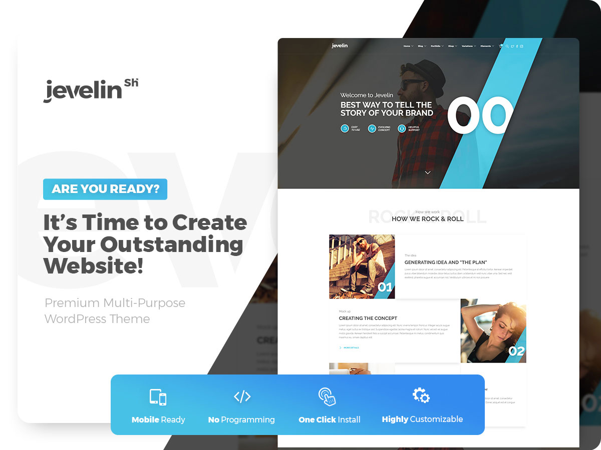
Jevelin will instantly build confidence in you when you decide to make a page all on your own. Yes, you! Note that you will not need to write a single line of code when setting up an online presence for your project or business. When you employ the powerful and practical Jevelin and the simplicity of dragging and dropping, you will quickly have complete web design set up to go live.
To kick things off like a champ, choose one from over thirty demos and start on the right path. Each layout is entirely editable with WPBakery Page Builder. The latter also gives you a chance to come up with custom layouts, specially designed for your niche. Of course, Jevelin also sports all the latest trends, making sure the operation of your website runs smoothly and flawlessly. That said, Jevelin does not miss responsiveness, cross-browser customization, fast loading speed and SEO optimization.
More info / Download DemoThe Best CSS Website Templates You Can Download Today
Glint – CSS Template
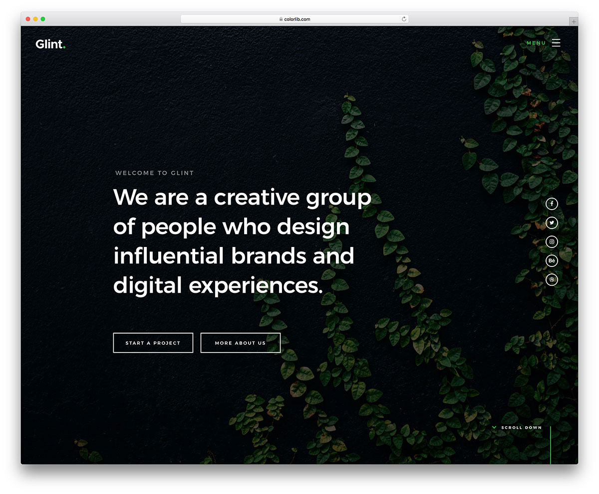The major CSS update you get in the modern website is the cool animation effects. You can easily grab your visitors’ attention to the web element you want by adding cool animation effects to the elements.
Glint website template gives you trendy visual effects on your website. Developers have used the latest CSS3 to this website template. As soon as you land on this website template demo, you will see an arrow indicated you to scroll down to control; this is the modern website, letting your visitors navigate your site easily.
All the cool transitions from the sides and fade in the entry of the website elements easily help you to get the visitors attention on the spot you want.
More info / Download DemoPhotoGallery – Free CSS Template

PhotoGallery is a wonderful free CSS website template for photographers. Whether you are just starting out your photo project or you are an established photographer, PhotoGallery is here to take your project to new heights. With its creative and modern web design, you will spark everyone’s curiosity and make them express their interest in learning more about what you do. Along with the striking index page, PhotoGallery also delivers a beautiful gallery, enticing a single gallery section, blog, and a contact page. Yes, that’s all you are getting with PhotoGallery.
What’s more, the tool is also mobile-ready and cross-browser compatible, making sure the experience is the same amazing one regardless of the device and platform they use. If you are in the process of expanding your project and take things into your hands, do it with PhotoGallery.
More info / Download DemoCryptian
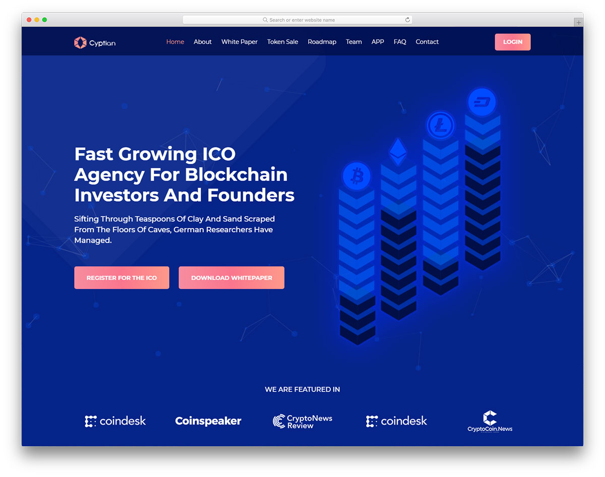
Cryptian, as the name suggests, is a free website template for ICO agencies, cryptocurrency and blockchain. With its modern design, you will leave a strong and lasting impression on everyone. Cryptian is also fully in tune with modern devices and web browsers, operating without a hitch at all times.
Brand logo slider, animations, floating navigation, call-to-actions, FAQ carousels and unique social media buttons, it’s all available for you to benefit from. Keep in mind, Cryptian is also great for creating single-page websites, so everything is accessible in a mere few scrolls apart. Enter the crypto world with a top-notch website, thanks to Cryptian.
More info / Download DemoSonar
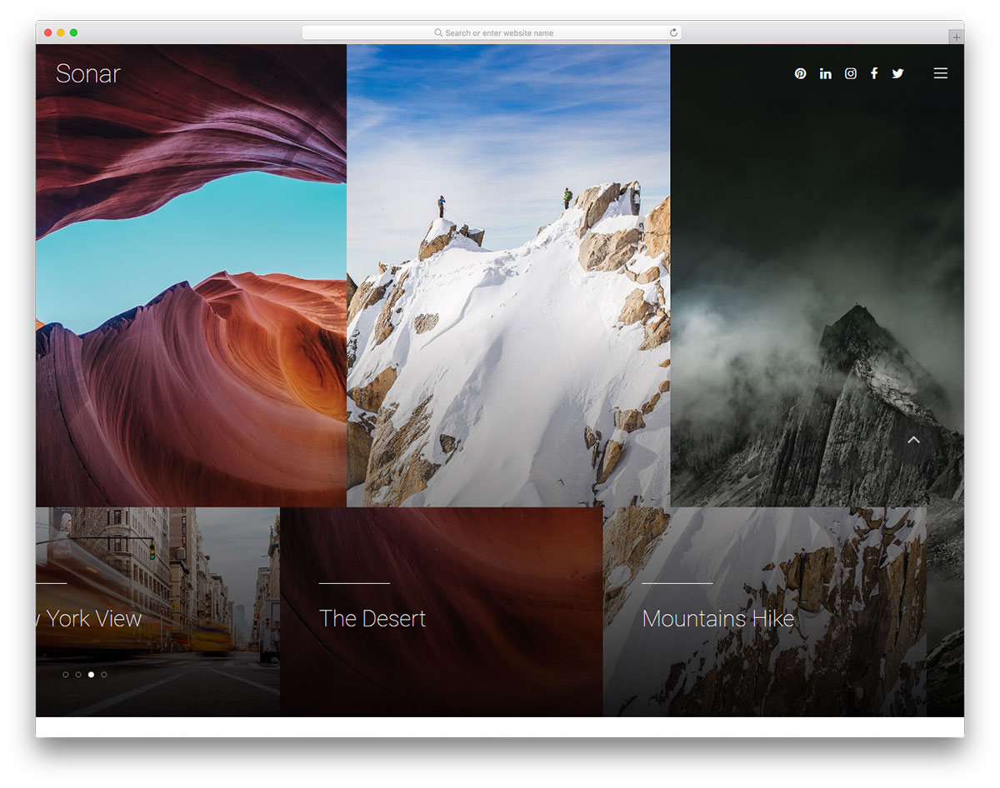
Sonar is a free CSS website template for photographers and photography agencies. The creativity of the tool makes sure that it delivers a pleasant experience across all devices and platforms. Sonar practices only modern technologies, so you know your website’s operation will be flawless.
Carousels, sidebar menu, sticky header, back to top button and on scroll content loading are just some of the specialties you get with the Sonar kit. You can also create a beautiful portfolio and start a blog. The options are very many when it comes to Sonar, so take it to your total advantage.
More info / Download DemoVideoMag
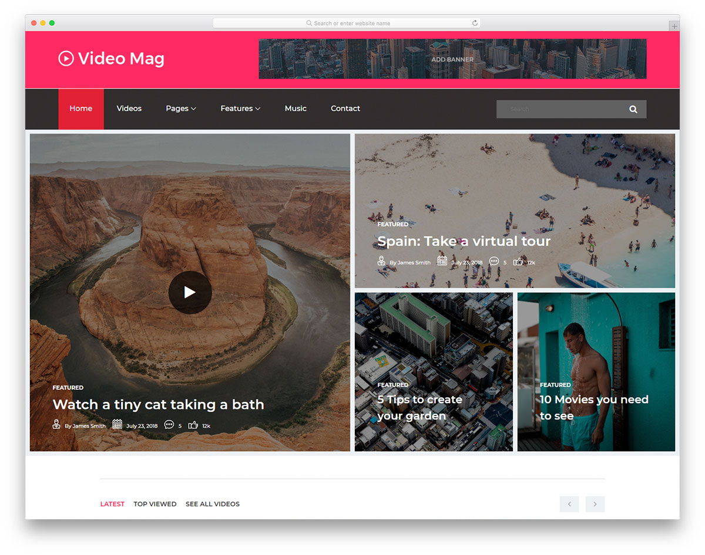
If you would like to start an online magazine that focuses on video content primarily, that’s when you opt for VideoMag. It is a superb template that costs you nothing, yet it contains many useful features and page layouts. You are welcome to use VideoMag out of the box, but if you would like to beautify it, you can do that, too.
Moreover, VideoMag comes with preset ad placements, social media icons, a drop-down menu and a featured posts carousel. Finally, you can use VideoMag for niche and general video news sites, as it easily handles multiple categories.
More info / Download DemoPhilosophy

Philosophy is an exciting free website template that works for all types of blogs you would like to start. Instead of doing things the traditional way, you can always spice things up with Philosophy. It rocks a cool design that will help you create your overall site experience more enjoyable. This goes for mobile devices, too.
Philosophy has social icons, a drop-down menu, a back to top button and delivers content beautifully on scroll. It even includes a functional contact form and Google Maps, which saves you additional time. Finally, you can always personalize Philosophy to your signature style, but using it as-is is also an option.
More info / Download DemoAppy

When building a landing page for an application, make it happen with the impactful Appy. It is a tool full of great features and functions that will help you push the boundaries even further. With a solid online presence of an app, you can increase the downloads over and beyond. Of course, marketing is crucial, but you need to start somewhere.
Appy comes with all the necessary sections to create a full-blown display of your app. It has testimonials/reviews, screenshot carousel, floating navigation and call-to-action buttons, to name a few. You can even activate the blog module and introduce strategic content marketing.
More info / Download DemoWebMag
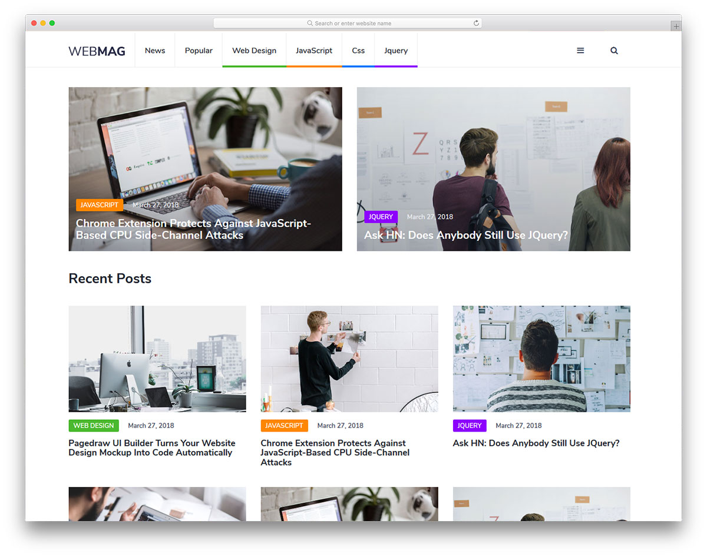
Building an online magazine needs not start from the ground up. Instead, use a free CSS website template, WebMag, and kick-start your project with style. WebMag uses only the latest technologies to guarantee a first-rate performance across all devices and platforms. Responsiveness, cross-browser compatibility and retina-friendliness, WebMag takes care of it all.
Other cool features of WebMag are a sidebar menu, a contact form and a floating navbar that only appears once you start scrolling back to the top. In short, if you would like to speed up the process of establishing a news site, make it happen with WebMag.
More info / Download DemoQuantum
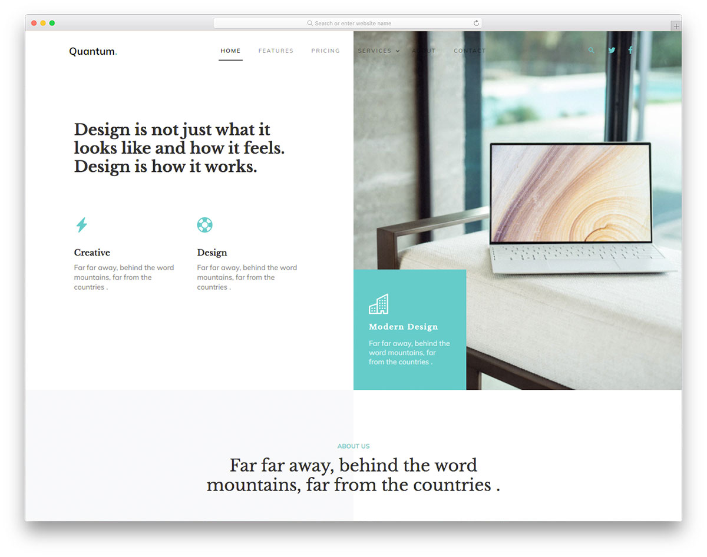
Quantum is a powerful free CSS website template for building landing pages with a meaning. While you can use it for a product, it would be best to employ Quantum for creating an agency, heck, even freelancer, landing page website. The clean design and neat features will help you pop.
With the split-screen above the fold section, you can play around with image and text combinations until you find a fascinating one. Quantum also has sticky navigation, pricing plans and loads content beautifully on the scroll. If you are ready to shine online, pick Quantum now.
More info / Download DemoReshape

Reshape is the best free template if you are establishing an online portfolio for architects or interior designers. There are all these impressive features that you can take to your advantage and make a difference. Reshape has a nice mixture of white and black, making it very dynamic and appealing to the eye.
Moreover, Reshape also uses only the latest technologies and tools. With this, it promises exceptional performance across all devices and platforms. Feel free to work with the default sample or even introduce your edits and improvements – it’s possible. A few of the highlights are animations, carousels, testimonials and a functional contact form.
More info / Download DemoSpace
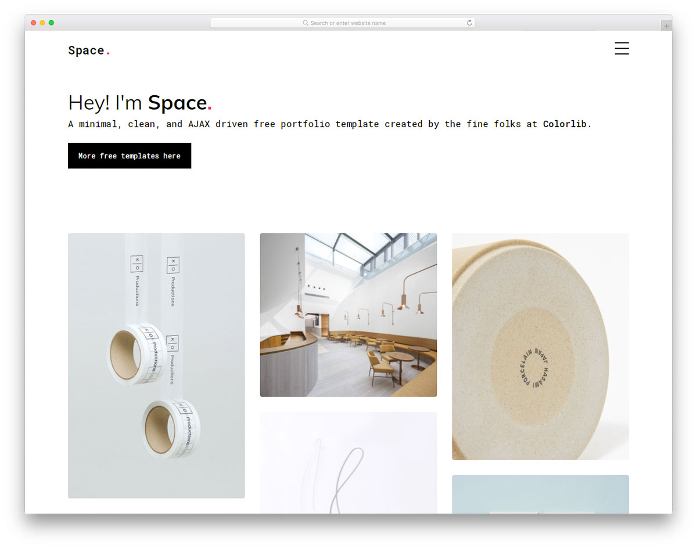
Secure your space on the internet with Space. This clean and minimalist, yet highly creative free website template promises a dope online portfolio creation. Regarldess of your creative venture, you can make a website with Space easily. Even though an HTML template, the code is neat and tidy, so everyone will enjoy working with it.
A ton of modern features await every Space user. Even though the design is very clean, the special attention to detail makes it stand out from the masses. The content reveal and other animations will trigger everyone’s interest right from the get-go.
More info / Download DemoInspire
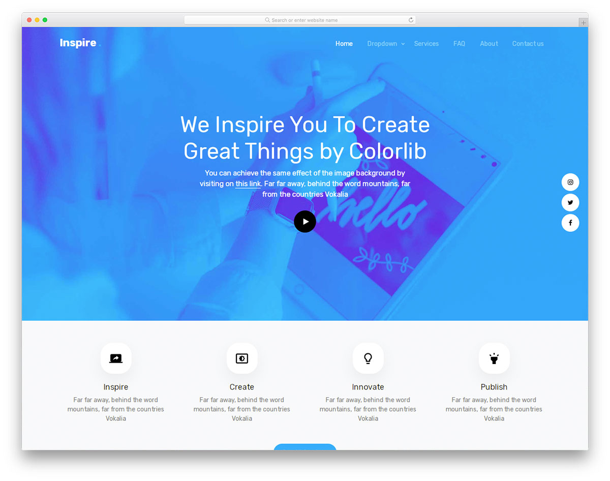
Amaze and inspire your potential prospects with Inspire. Create a website that will take your business to the next level without the need to start moving forward from scratch. Inspire is here for everyone, whether you are an experienced web developer or a beginner. The user-friendly code structure unlocks great options and possibilities to make an outcome that will be to your liking precisely. With this in mind, you can either use the default sample or improve it further – the final build will undoubtedly be spectacular.
Above the fold, Inspire treats you to a full-screen banner with text, link and social icons. You can also use a video and engage everyone right from the get-go. Testimonials, inner page layouts, drop menu and a functional contact form are just some of the specialties that Inspire also has ready for you.
More info / Download DemoHomey

For real estate agencies and realtors, Homey is this marvelous free CSS website template that will do the trick. Put your properties right in front of your audience with a well-thought-out website that will help raise your potential. Homey sports all sorts of great features that will do you well. With the predefined template, you can save yourself plenty of time and energy, which you can instead invest in marketing your offerings.
In the bundle of features, you will find carousels, hover effect, testimonials section and some additional inner pages. Without the need to spend a dime, you can now start working your way to launching a sophisticated real estate website that will have a strong and positive impact on the industry. By the way, if you would like to unlock the theme and use it for whatever without the need to follow copyright direction, you can upgrade to pro any time.
More info / Download DemoBold
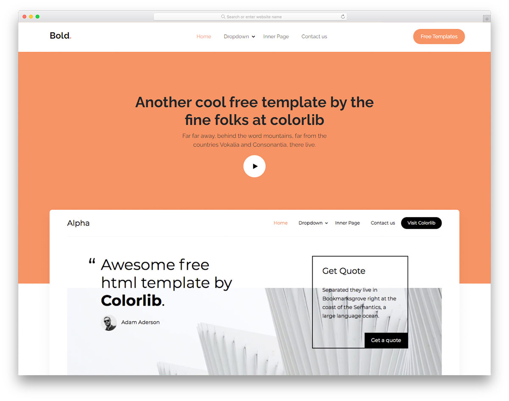
Creating a landing page happens quicker than you think when you have the right tools at hand. For instance, pick Bold and enjoy fine-tunning it according to your directions. Making a website from scratch seems very old-school, as there are oh so many alternatives available that fit your purpose out of the box or come close. Bold is flexible enough to work with an array of different marketing campaigns. Even if you would like to create an impactful one-page business website, Bold is down for it.
The layout of Bold is 100% responsive and browser compatible, promising a spectacular performance. Other highlights include video support, animated stats, inquiry/contact form and tons of other practicalities. If you are ready to make a difference, start with the right free CSS website template, like Bold.
More info / Download DemoCovid
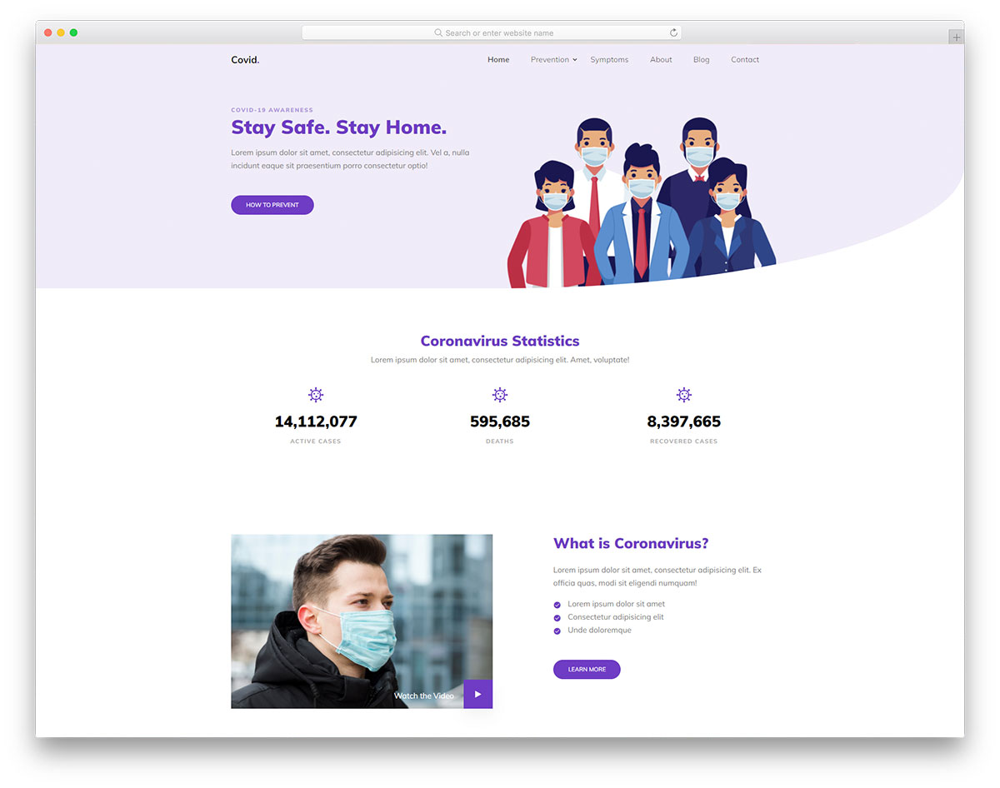
If you would like to spread the awareness for COVID-19, do it with Covid. This free website template is packed with great features and functions that will make a difference. Great color choice and all the other creative touches make sure that everyone will enjoy browsing your website. Still, if you would like to introduce your touch to Covid, you can, too. After all, Covid is fully editable and adjustable, making sure everyone gets the most out of it, regardless of the meticulous taste.
The layout of Covid is 100% responsive and cross-browser compatible. Along with the home page, you also get different inner designs, including blog and contact. As for the latter, it includes a workable contact form for your convenience. Spread the word out with style and sophistication, thanks to Covid.
More info / Download DemoCake
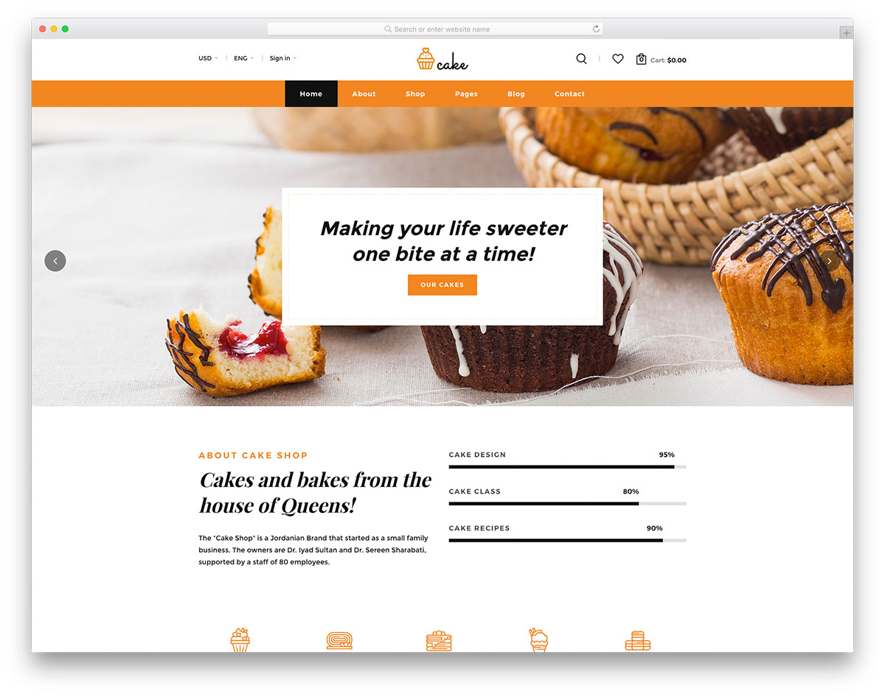
Cake is a delicious free website template for cake shops and bakeries. Follow the current trends and create a professional website that will help promote your business over and beyond. With Cake, you can work your way to successfully launching a website a lot swifter. Let’s face it, the days of building everything from the ground up are ower. You can now profit from a predefined and highly resourceful solution that will do you well.
As for Cake, you can expect a lot of handy elements and components that will create a first-class outcome. Not just that, but feel free to introduce your or your client’s branding directions, too. Cake is open to “suggestions,” so make sure you tailor it according to your project’s regulations. Keep in mind, you can also use Cake for creating an online store in case you offer food delivery, even in-shop pickups.
More info / Download DemoFurn
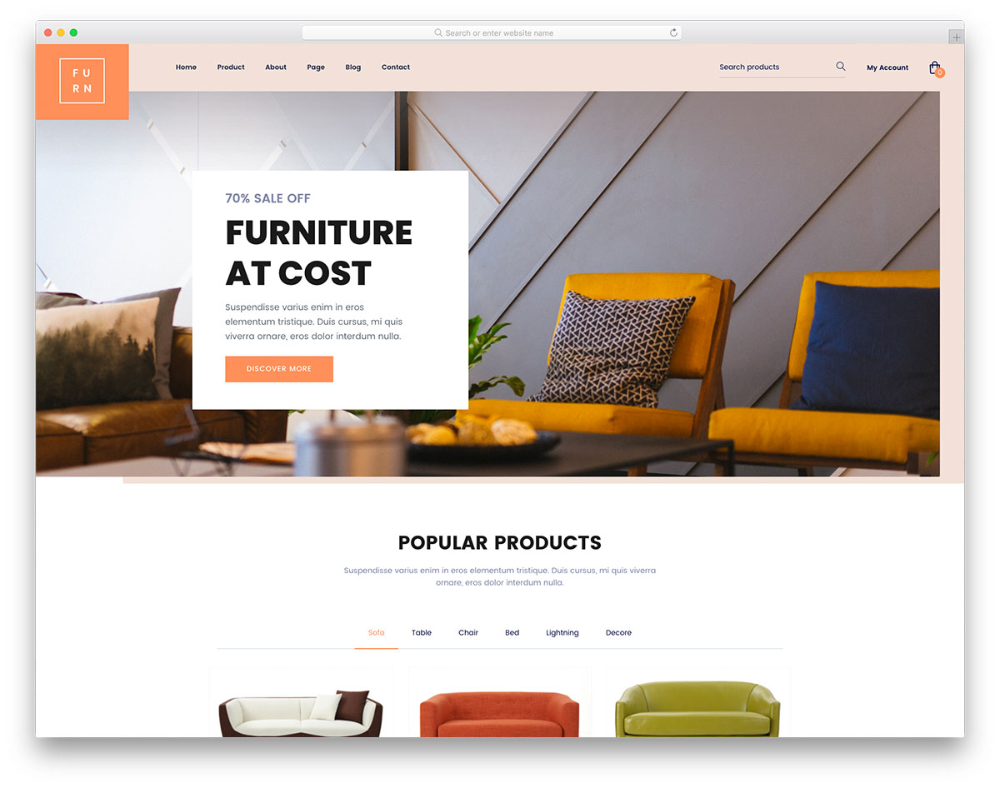
Furn is short for a professional and free furniture website template. Whether you would like to resell products or build a website for a brand, you can make them both with Furn. The tool comes with many goodies that will take care of your objective effortlessly. From home and internal page layouts, it’s all at your fingertips to put into practice as is or with your creative twist to it. Keep in mind, you can use Furn free forever (you need to keep footer copyright intact).
Furthermore, Furn also makes sure that your website follows all the current internet trends for smooth operation. Floating header, back to top button, drop-down menu, Furn rocks all the good stuff and more. It also includes a working contact form and Google Maps, so you do not have to create it yourself.
More info / Download DemoRettro
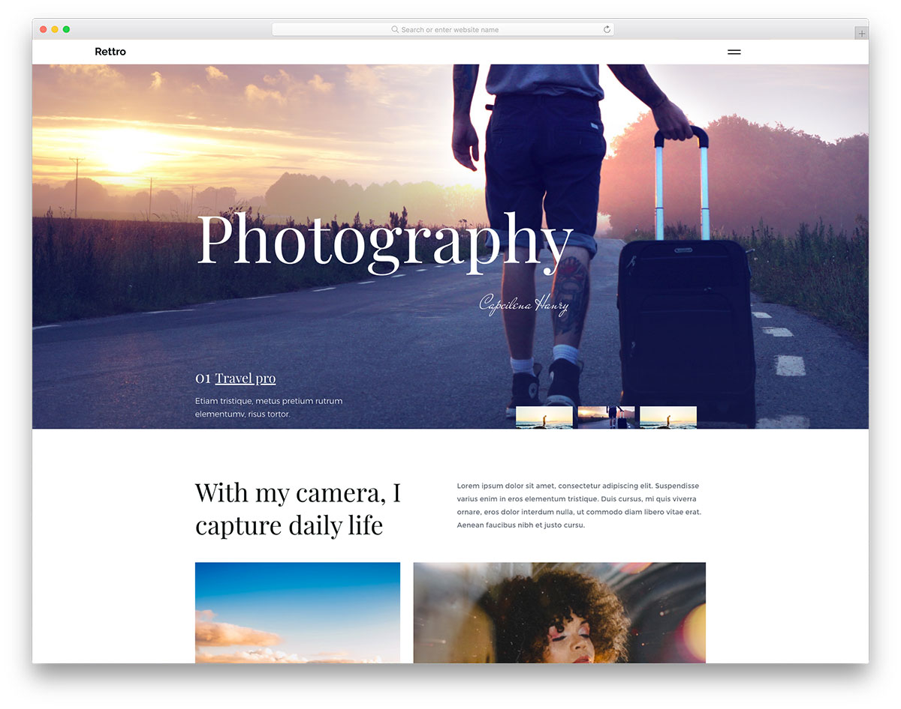
All photographers, amateur and professional, should have a website. However, at the end of the day, it all comes down to your goals. But when you do decide to sort out an online presence/portfolio, consider using Rettro. It is a free website template that you will find a lot of fun using. Rettro is organized, so you can quickly figure things out, edit and customize it and call it a day. You will also find that Rettro has quite some distinct features that will help you stand out from the masses.
First and foremost is the full-width slideshow with thumbnails. Use it strategically and you raise your potential of winning over new fans and clients. Testimonials, pricing plans, image feed (you can use it for Instagram posts), social icons and blog pages, all this and more is at your disposal. Take your photo project to new heights with a website that will turn heads, thanks to Rettro.
More info / Download DemoVideograph
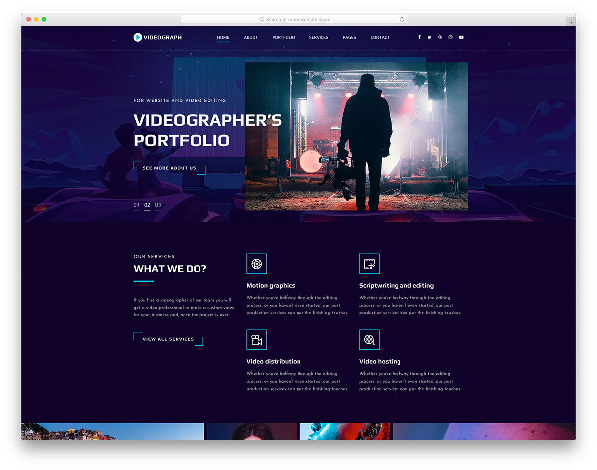
Filmmakers and videographers, amateurs and professionals, create an online portfolio with Videograph now. This impactful free CSS website template will wow everyone who lands on your page. The amazing dark look and clever choice of colors create a memorable first impression that will help win over new clients. However, once you stuff Videograph with your compelling content and works of art, you immediately take things to the next level.
The features of Videograph include text slider, social media buttons, animated statistics, featured blog posts and a full-blown contact page. Whether you are just starting out or an established videographer, consider building a website, as it will raise your potential to new heights. That’s when Videograph and all its terrific perks come into play. Hit the download button; you have nothing to lose yet all to gain.
More info / Download DemoMostudio

For photographers in particular, but really, any creative out there, Mostudio is a stunning free website template with dark look. This tool promises to amaze everyone who sees your website. Not just that, but head over to the demo preview and it will do the same for you. Since it is a free tool, you can put it into practice right away, one click is all it takes. From then on, you can either work with Mostudio out of the box or make adjustments. Indeed, Mostudio can follow your signature style with ease.
Sticky left sidebar menu, scrolling animations, load more button, pricing and a contact form are all the varying amenities of Mostudio. Of course, you can also create a beautiful gallery and write a compelling about page. Make a persuasive online portfolio with Mostudio and enjoy growing your business to new successes.
More info / Download DemoRacks
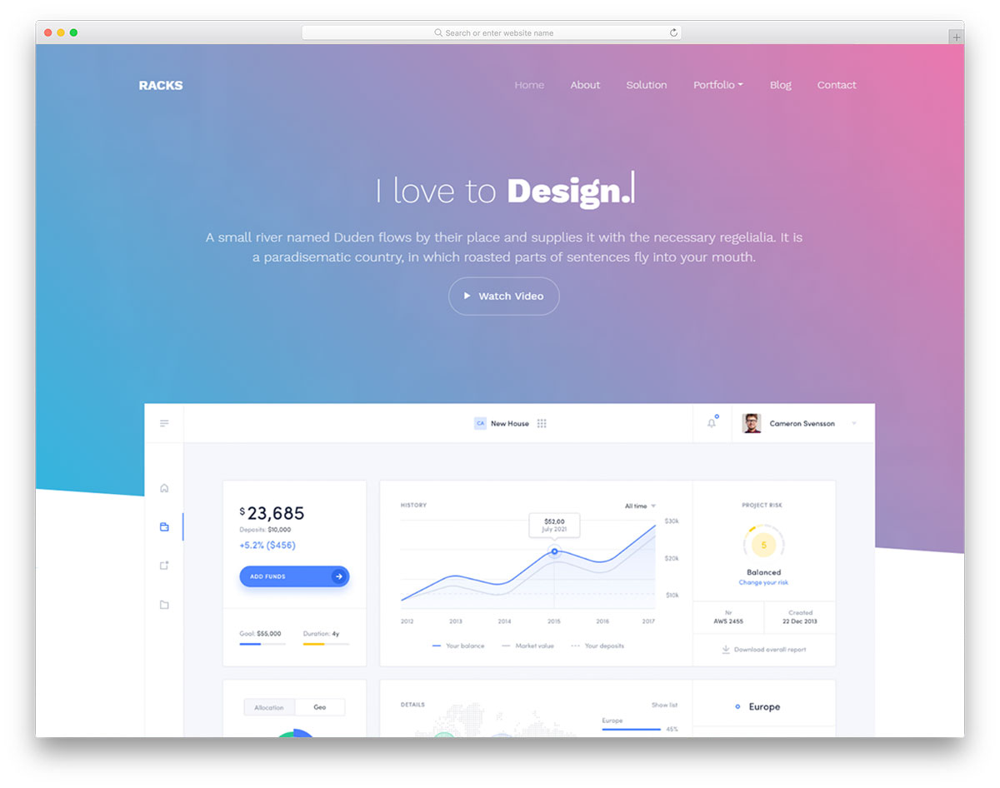
Presenting your software company on the internet happens professionally with the use of Racks. It is a spectacular free site canvas that uses only the latest technologies. With that in mind, you know that the performance will always be first-class across all devices and platforms. But this is still just the beginning of all the goodies that Racks has available for you. First and foremost, you can employ Racks as is or you can modify it according to your branding regulations.
Some other goodies of Racks are typewriter effect, gradient colors, drop-down menu, sticky navbar, on scroll content loading and testimonials slider. Multiple inner page layouts await you, too, as well as a working contact form and Google Maps integration. The pleasant, almost soothing style of Racks is readily-available to impress everyone who lands on your website and raises the potential of winning them over.
More info / Download DemoWebApp
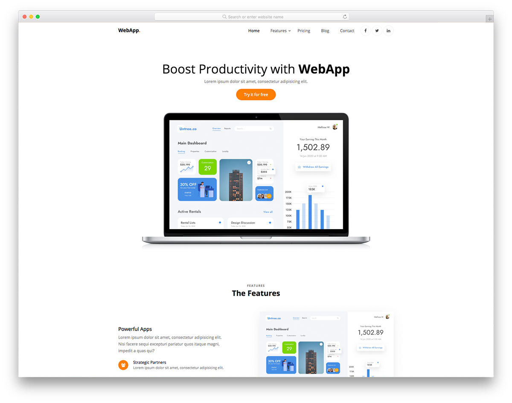
Even though WebApp fits web applications best, this free website template easily adapts to other intentions. It is a modern solution that helps you save time and energy when coming up with a top-notch online presence. Promote your project in style with a killer page that WebApp will help you set up. It has a clean look, making sure all the information comes into view distraction-free. You can showcase screenshots, promote all the special and unique features and display pricing options.
Top and sidebar reveal navigations, sticky header, multi-level drop-down menu, blog and contact form, all this and more is what WebApp delivers. Also, it is a template with a one-page structure, meaning, excellent user experience, as all the information is just scrolling away. Finally, if you already have reviews/testimonials to share, you can, too.
More info / Download DemoConsulto
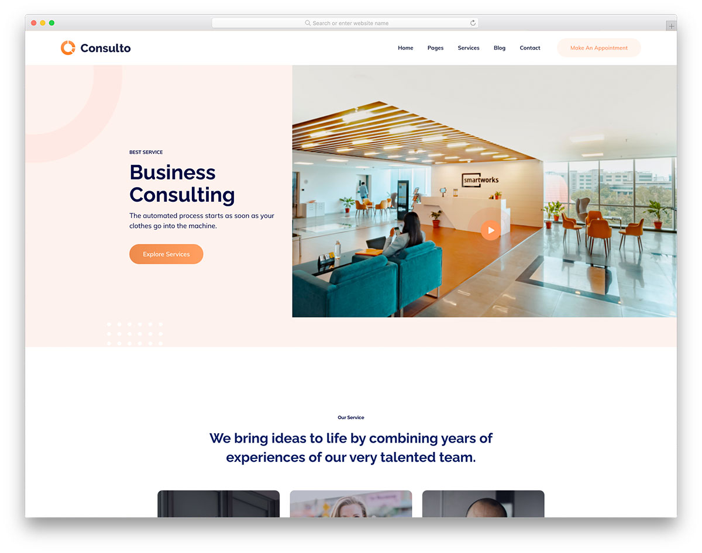
Consulto is an all-around free website template for consulting businesses of all types. If you are looking to promote your firm on the internet with style, make it happen with Consulto. This tool is a pack of terrific amenities that will get you moving immediately. And if you fancy the default design, you are in luck, as you can save all this additional time and effort. Keep in mind, you can play around with customization tweaks, too, for as long as you keep footer copyright intact (a link back to Colorlib).
As for the features, Consulto sports carousel, sticky menu, testimonials slider, back to top button and social media buttons. Introduce your custom content, personalize and brand Consulto, display your business’ location and more. Take things into your hands and set yourself apart from the competition with a unique website, thanks to Consulto.
More info / Download DemoArchlab
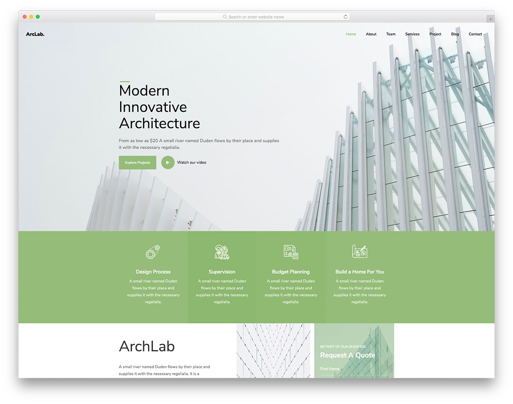
Architects and architectural firms, Archlab is the one free CSS website template that will do you well. If you are in the process of building a fresh website or improving existing online presence, make it happen with Archlab. Due to the carefully crafted design, Archlab promises a jaw-dropping outcome that will impress everyone. That applies even if you utilize it out of the box. But you can unlock yourself unlimited options and possibilities by modifying Archlab according to your liking.
Some of the features that spice things up are parallax effect, animated statistics, on scroll content loading and testimonials. Write a fascinating about page, share pricing, promote your services and even start a compelling blog – make the website promote your business in the best possible way. Archlab is here to help you out on your journey, so take full advantage of it.
More info / Download DemoPersonalPortfolio

As the name implies, PersonalPortfolio is a free CSS website template that will help with the process of establishing a personal website. Regardless of your creative intention, you can push the boundaries with PersonalPortfolio and make yourself even more popular. Create an online presence that will promote your amazing work and services over and beyond, helping you make a success out of yourself.
Full-width layout, call-to-action buttons, back to top button, filterable portfolio, testimonials and logo slider are all the different traits of PersonalPortfolio. Moreover, you can even turn PersonalPortfolio into a single-page website, if that is something you are interested in. Instead of doing all the heavy lifting yourself, let PersonalPortfolio assist you in marching toward the victorious realization of your personal page. Still, basic coding knowledge is necessary to turn PersonalPortfolio into an active website.
More info / Download DemoEndgame
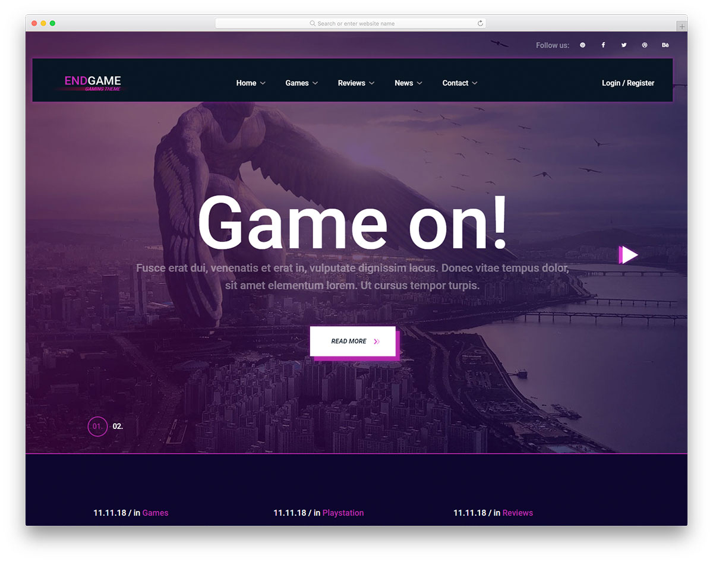
Are you interested in building a gaming blog? Well, you are in luck, as Endgame is the exclusive free website template that will do the trick out of the box. It comes with different sample pages that you can put into practice and start with the right foot forward instantaneously. For your information, Endgame comes with no hidden fees, readily available for you to employ it with the click on the download button. But that does not mean your gaming blog will be half-baked – a complete opposite. Endgame has tons of great features and functions that will set you apart from the competition.
Slider, drop-down menu, dark mode, social icons, contact form, Google Maps, all this and more is part of the Endgame bundle. The layout is flexible and responsive, too, so your content will appear butter smoothly on all well-liked devices and web browsers.
More info / Download DemoFitnessClub
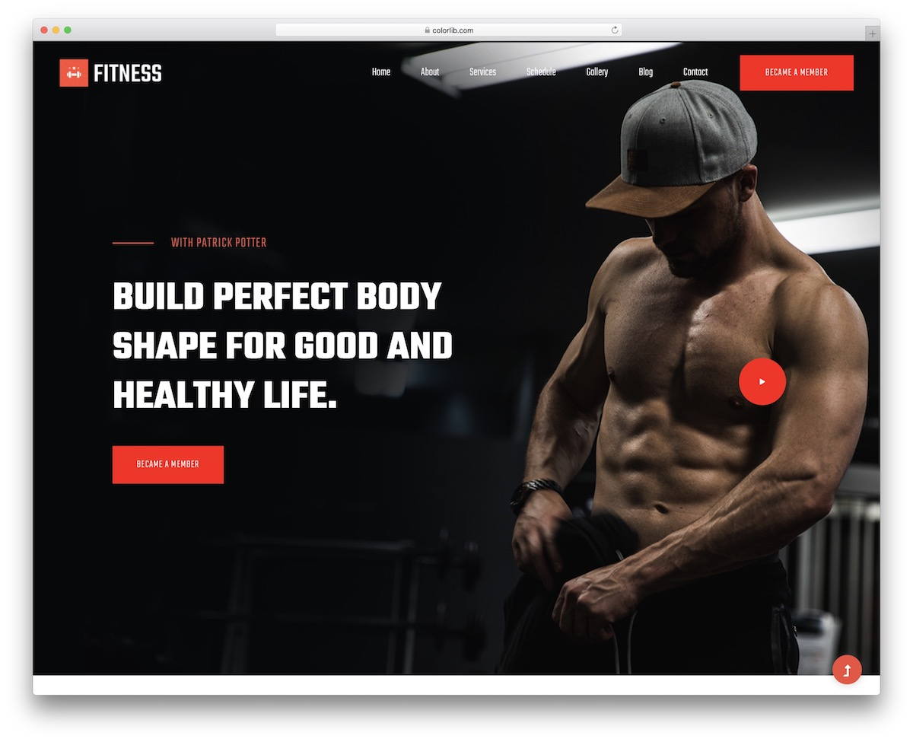
Fitness centers can now greatly profit from FitnessClub, a free website template. Even as a personal trainer, you can take FitnessClub to your total advantage for sharing your business with a much broader audience. It is an excellent web design that helps you skip the building process from complete scratch. Sure, FitnessClub is an HTML template that does require coding knowledge, but altogether, it is a great alternative that offers you to quick-start something new.
Text slider, sticky header, back to top button, feedbacks/testimonials, weekly schedule and a contact form are just a few of the specialties that FitnessClub allows you to put into play. Finally, even though FitnessClub is a multi-page template, with a few tweaks, you can easily use it for creating a one-page website. Take the promotion of your fitness facility to new heights with the right template and enjoy the immediate difference.
More info / Download DemoSoccer

When building a website for a soccer (fan) club, hence the name, go with Soccer. A template full of amazingness that will help you enoy a much faster final product realization. Let’s face it, with the design predefined, as well as an array of features, you avoid all the heavy lifting entirely. Even though a free solution, Soccer is more premium-like than anything else. Wait until you see the live preview page and witness this site canvas in its full effect.
The layout is fluid, working on smartphones, tablets and desktops like a dream. It is also optimized for web browsers and retina screens. Other goodies include countdown timer, call-to-action buttons, matches, video support and even a blog section. You can create an outcome that will turn heads even by employing Soccer’s default settings.
More info / Download DemoBrber
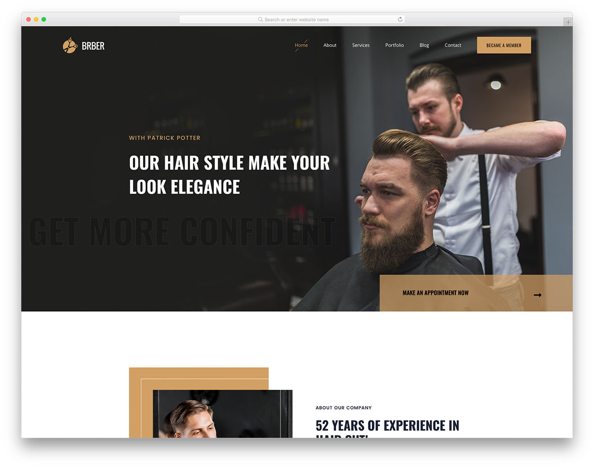
Barber shops and hair salons for men, Brber is the free CSS website template that will do the trick on your journey to bringing your business to the online space. In this day and age, you should not be lacking a professional and sophisticated website. After all, with oh so many great web designs, you do not need to invest countless hours, as well as save money. In this exclusive case, you can get the ball rolling with Brber, which raises your potential to level eleven.
Just like other templates on this list, Brber is 100% mobile-ready and browser compatible for the striking performance that your website deserves. Hover effects, text slider, loading navigation, pricing options and modern gallery are just a handful of traits that Brber highlights. It can be yours with the click on the button, readily available to help you make some noise online sooner rather than later.
More info / Download DemoArchi
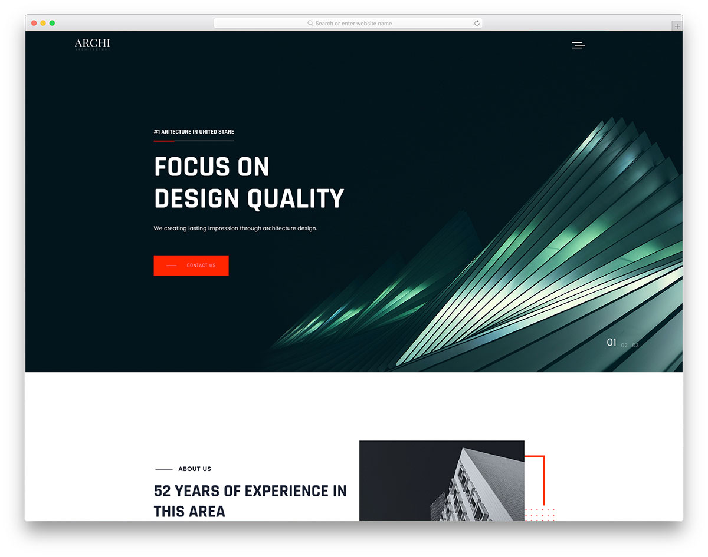
Archi is a modern and jaw-dropping free website template for architects. With the impressive design, you will have no trouble triggering everyone’s interest in the snap of a finger. Archi is a tool that promises a fantastic end product sooner rather than later. After all, there is no need to start from the ground up anymore. Let Archi do the trick with the predefined page layouts and all the varying features and functions.
Needless to say, Archi rocks a fluid layout that instantly adjusts to all devices, mobile and desktop. Some other highlights of the template include a large slider, call-to-actions, sticky header, back to top button and video support. Showcase projects and even start writing a blog, all this and more with Archi. With the integrated Google Maps, you can also showcase the exact location of your firm for in-person meetings.
More info / Download DemoSunzine

Sunzine is this distinct free CSS website template that takes your photography project to level eleven. With a filterable home page portfolio, everyone can quickly learn about your terrific masterpieces right away. Of course, Sunzine rocks other inner sections for you to create a full-blown presentation of yourself and your professional work. But if you are still an amateur, Sunzine is perfect for you, too.
The design of Sunzine is clean and simplistic, making sure all the content appears front and center. Other goodies contain social media buttons, Google Maps, functional contact form, Bootstrap structure and retina-friendliness. Your Sunzine-based website will, of course, work on mobile and desktop devices flawlessly. If you are searching for an easily distinguishable free website template for photographers, Sunzine is the one. Make it yours now; it is just a click away anyway.
More info / Download DemoZogin

Yogis and yoga studios in particular, Zogin is the remarkable web design that will do you well. When setting up a dedicated website, you better not miss a ready-to-use Colorlib template. We made sure that all our items are advanced and premium-like while costing you nothing. And Zogin is another magnificent solution for your convenience. Hit the download button now and it can be yours already.
In the Zogin bundle, you will find a plethora of greatness that will help speed up the process of establishing a yoga page. Full-width slider, animated statistics, gallery, appointment form and testimonials are just a few of the specialties that Zogin brings to the table. What’s more, you can also make adjustments and tailor Zogin to your needs and regulations precisely. Let the journey to epic success begin with an impactful online presence.
More info / Download DemoYogalife
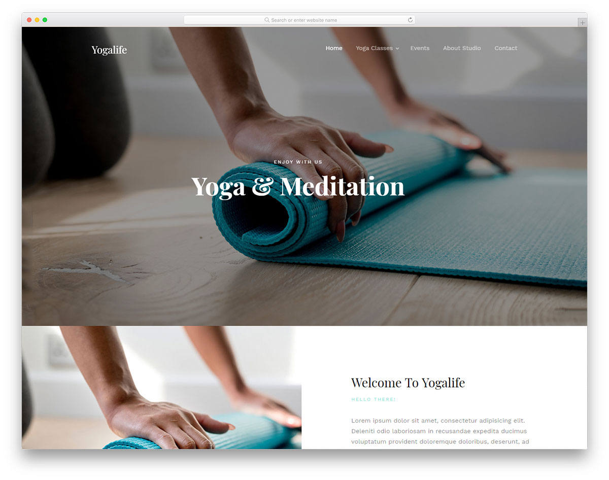
Hence the name, Yogalife is a free CSS website template for yogis and yoga studios. It welcomes all your site guests with a full-screen slider that will take them on an adventure through relaxation and exercise. The slideshow also features a parallax effect that gives it an extra touch of sophistication. Moreover, Yogalife sports sticky navbar with a multi-level drop-down menu, pricing plans, a pop-up gallery and an additional slider to announce your forthcoming events.
With Yogalife, you can push your spectacular services and win over more students. Promote your different yoga classes, share your story in the about us section and link your page to your social media accounts. Contact page with a working form is also part of the deal so you do not need to build one yourself.
More info / Download DemoLoanday
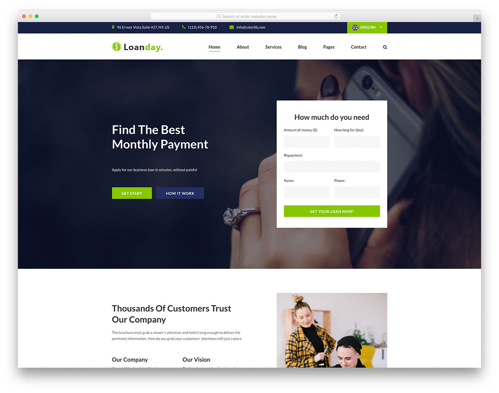
Daily loans and other financial businesses, Loanday is the free CSS website template that assists you at bringing into being a striking and attention-grabbing online presence. Promote your business in style now and enjoy the outcome that will help raise your potential to level eleven. With all the different predefined sections and page layouts, you can put on display all and everything to impress your clientele.
Without a shadow of a doubt, Loanday is indeed compatible with all popular devices, web browser and retina screens. In short, the performance of your website will be spectacular and that is a guarantee. If you would like to brand and customize Loanday, of course, you can do that, too. Any type of loans, be it personal, business, health or education, you can now advertise online with Loanday like a champ.
More info / Download DemoTimeZone

TimeZone, as the name suggests, is a free CSS website template that comes ideal for online watch stores. Thanks to the cleanness and minimalist look of the web design, TimeZone puts all the timepieces on display stunningly. Even if you stick to the default settings and only improve it with your branding directions and logo, the outcome will be nothing short of spectacular. On the other hand, you are also allowed to perform customization tweaks at free will.
In the kit, you will discover all sorts of convenient amenities. From slider and call-to-action buttons to sticky menu, back to top button, video support and hover effects, these are just a few of the goodies that TimeZone brings to the table. There is also an option to start a blog and implement strategic content marketing to grow your business over and beyond.
More info / Download DemoOgani

Ogani is another remarkable free CSS website template for an eCommerce website selling food and organic products. Even if you run a farm, you can employ Ogani to push your produce on the internet in style. Of course, this is still only an HTML website, meaning, you do need to know how to do the programming work to turn it into a functional website. However, no need to start from scratch.
There are different home and internal page design at your disposal to mix and match. Drop-down categories, social media icons, top bar, carousels, Google Maps and a functional contact form are all the various highlights of Ogani. If you are ready for something new that will help you start making some noise online, you better go with Ogani now.
More info / Download DemoLogis
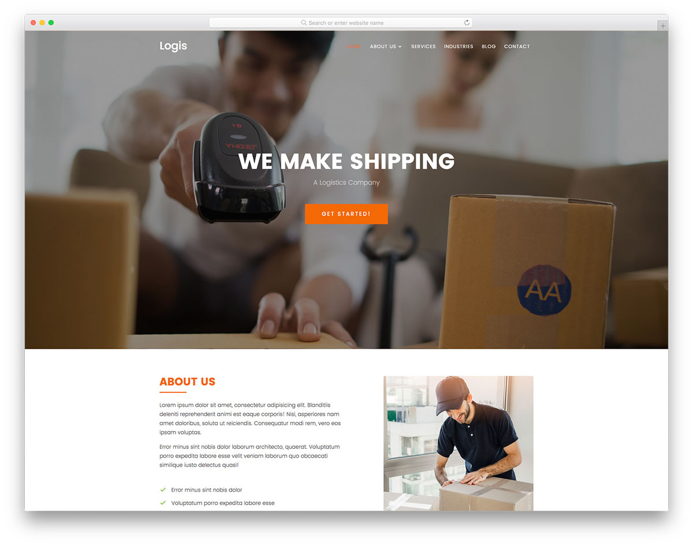
Logistics, cargo and transportation companies, you are all welcome to benefit from Logis tremendously. This free CSS website template is a pack of goodness that will do you exceptionally well. Instead of doing all the hard work from square one, you now have the design and quite some features ready-made. You can even utilize Logis as it comes out of the box or style it further, so it matches your company’s branding.
Just like any other site skin on this list, Logis also ensures full flexibility and extendability. Your website will operate without a hitch on smartphones, tablets and desktops, as well as all popular web browsers and retina screens. You are closer to building an impactful website than you were ever before, thanks to all the amazing perks and specialties of Logis.
More info / Download DemoAmin
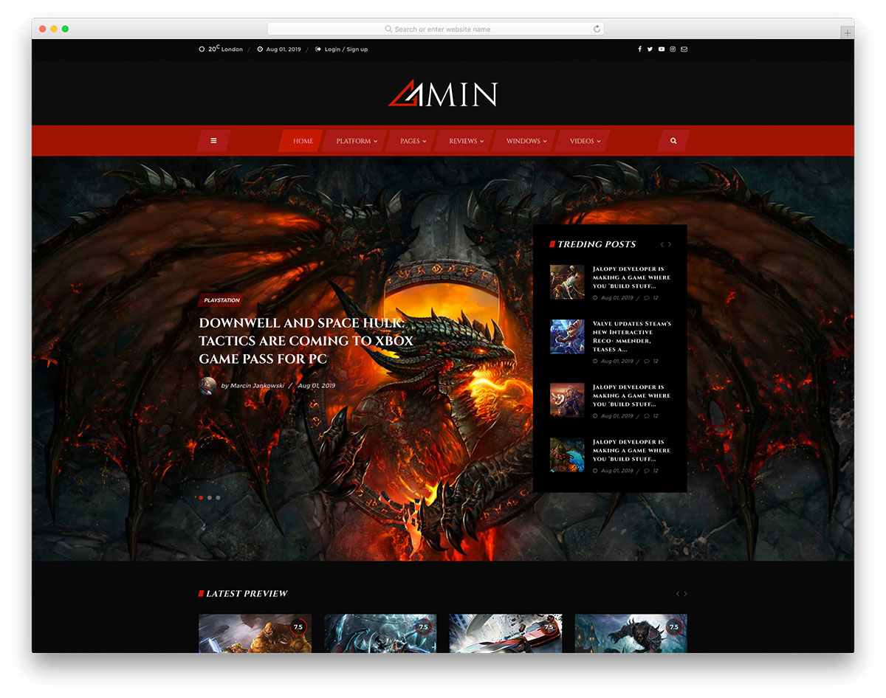
If you are interested in starting a gaming magazine, Amin is the free CSS website template to look into. This tool has the design and various other perks that will help you on your journey to a successful launch of a new online project. With the dark appearance, Amin makes sure to create a strong impact on everyone who comes across it. Whether you would like to focus solely on reviewing games, announcing new releases, you name it, Amin is perfect for anything gaming-related.
Moreover, the layout of this nifty site canvas is 100% mobile-ready and cross-browser compatible out of the box. Some other goodies include trending post slider, social media buttons, drop-down menu, functional contact form and left sidebar menu. Turn your passion for gaming into a project with Amin and start something new.
More info / Download DemoGymLife
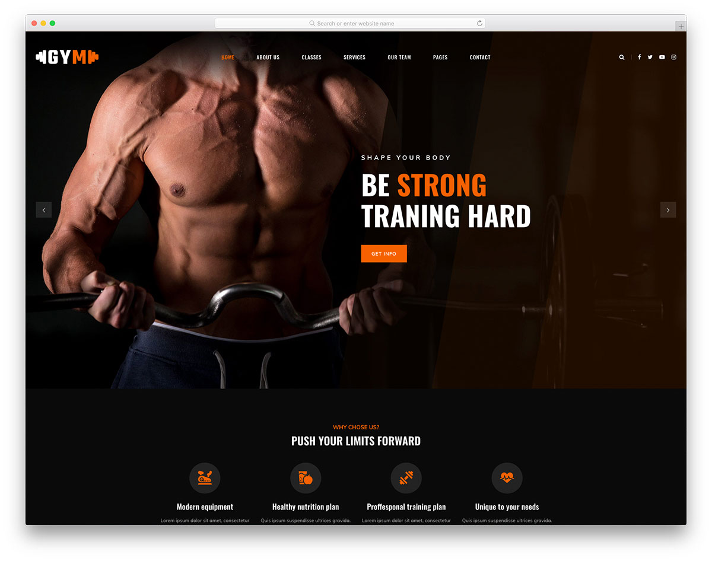
Fitnesses, gyms and personal trainers will find GymLife of great advantage when building a top-notch website. This free CSS website template ensures a magnificent outcome that will help raise your bsuiness’ potential to new heights. It has a dark and bold appearance that makes sure to positively impact every visitor and potential customer. With GymLife you can cover all the sections, bring into view all the classes, promote your team and more.
Instead of starting from the ground up, you can now save time and effort by employing the powerful and practical GymLife. From the home page to all the other inner layouts, blog and contact sections, GymLife takes care of everything out of the box. You can profit from various goodies, like slider, call-to-actions, pricing tables, carousels, contact form and Google Maps.
More info / Download DemoGiveHope
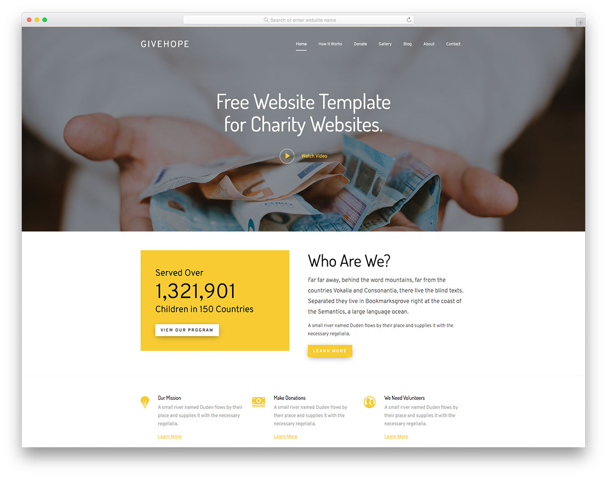
Raise your charity, non-profit organization or fundraiser’s potential with GiveHope, a free CSS website template. It is a modern, sophisticated and impactful web design that will help you start with the right foot forward immediately. Avoid the process of establishing your website from scratch by employing all the rewarding perks that GiveHope brings to the table. Even by employing this page skin out of the box, you guarantee yourself an outcome that will turn heads. But tweaking it according your branding directions is also a possibility.
Some of the features of GiveHope contain parallax effect, video support, animations, sticky menu, gallery, about page and a blog section. You also do not need to worry about technicalities, like responsiveness and cross-browser compatibility, as GiveHope sports them by default. Spread the awareness for one or several causes, raise funds and make an influence with GiveHope.
More info / Download DemoWebHostingService
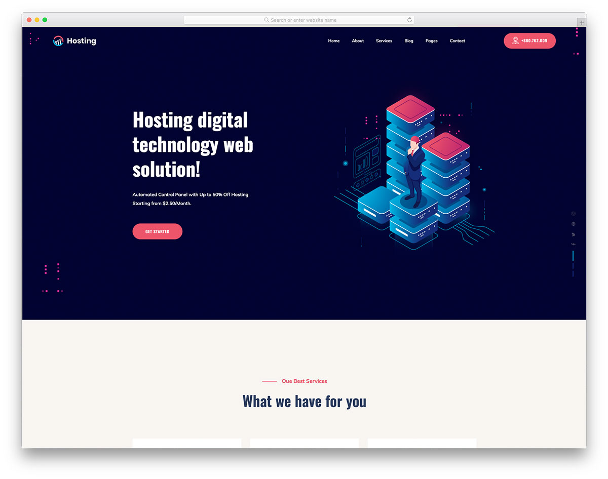
WebHostingService is a free CSS website template that, indeed, works for web hosting companies and domain registrars best. With the modern and impactful look, you can now create a striking end product that will turn heads. WebHostingService is a pack of amazingness that will help you on your journey to a successful launch of a new website. Starting from scratch is history in this day and age. With oh so many options and tools at your fingertips, you can pretty much start in no time at all.
WebHostingService rocks anything from slider and call-to-action buttons to back to top button, sticky navigation and loads more in between – all for your convenience. Share pricing, start a blog and introduce content marketing, connect your website with different social accounts and even share your location on Google Maps, yes, WebHostingService is a serious competitor.
More info / Download DemoStartupBusiness
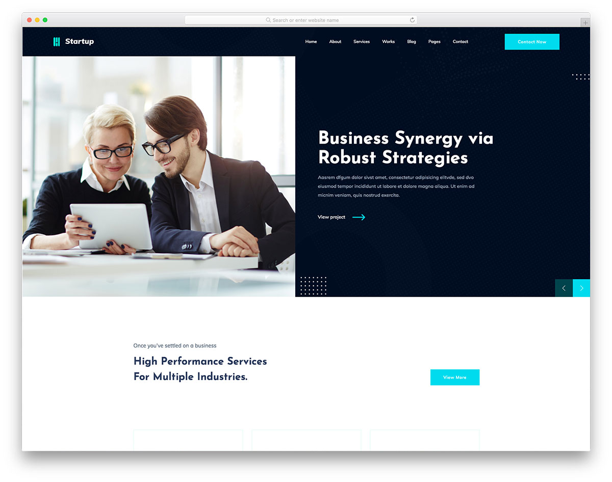
Small businesses, startups and agencies, StartupBusiness is meant for you. This professional and sophisticated free CSS website template knows no limits. After all, with the amazing flexibility, you can alter the default look of StartupBusiness according to your branding directions to a tee. But for many, they will just want to use StartupBusiness as it comes out of the box. To each their own.
In the bundle of amenities, StartupBusiness rocks slider, sticky menu, back to top button, skillbars, testimonials and a gallery. Multiple predefined elements also come at your disposal for you to mix and match them into the final design however you want. Also, if you plan on starting a blog, you can do that, too. After all, with clever content marketing, you can bring in even more potential clients to grow your business over and beyond.
More info / Download DemoAccounting

Accounting agencies and other financial businesses are welcome to start on the world wide web with Accounting. This free CSS website template equips you with a top-notch design, as well as multiple features that will do you well. You can just brand the default appearance with your colorway, add a logo and enrich it with your custom content and call it a day. This method works great, however, you can also go the extra mile and edit Accounting to the very last detail.
Accounting is lightweight, responsive, cross-browser compatible and in tune with retina screens. In the kit, Accounting delivers slider, animated statistics, on scroll content loading, testimonials and accordions, to name a few. You can also share pricing and offer everyone to book a free consultation with you. If you are ready to stand out from the masses, you better go with Accounting immediately – it is just a click away anyway.
More info / Download DemoCreate
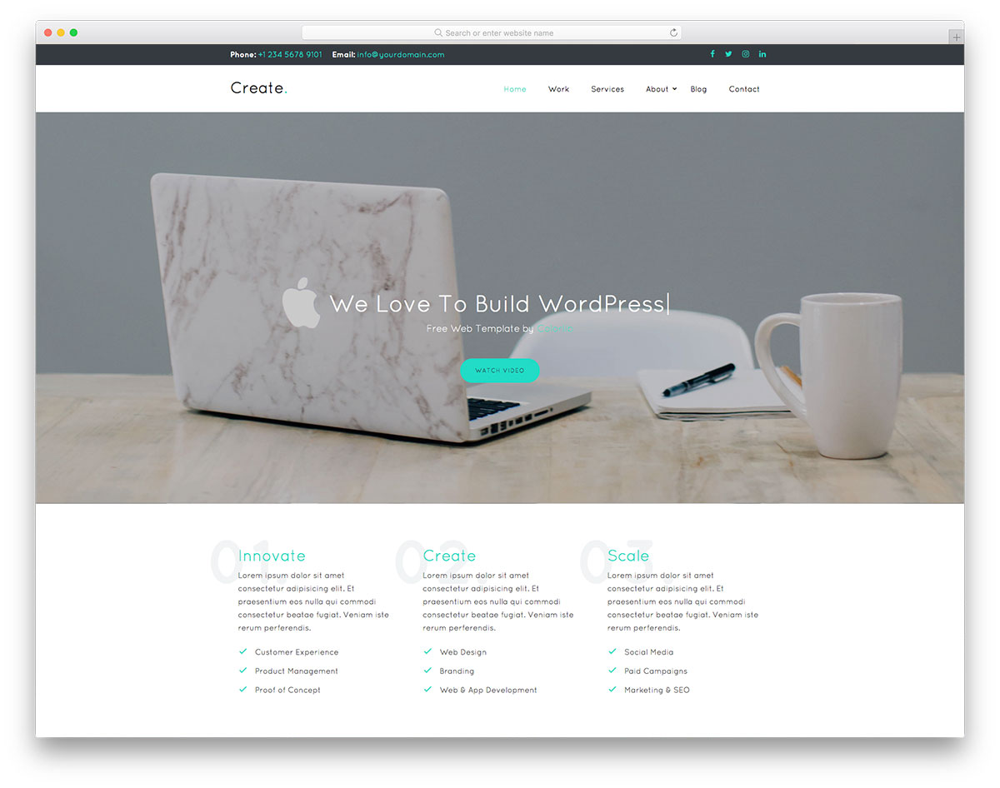
If you are willing to create, you will do the right thing with Create. This free CSS website template is a perfect option for everyone who is looking for a one-page site canvas with parallax and typewriter effects. With the two features alone, you will immediately trigger everyone’s attention. Of course, you can easily and quickly enrich Create with your creative touch and make it follow your signature style precisely. As simple as that. Still, Create is an HTML template, so you do need to know how to code to make the most out of it.
What’s more, Create includes floating navigation, gallery, testimonials slider, team section and a functional contact form. You can even start a blog and use it for content marketing to bring in even more potential clients and experience constant business growth.
More info / Download DemoWiser
Schools, universities, online learning programs, you name it, you can approach website creation with Wiser and make an immediate difference. This sophisticated and easy to use free CSS website template is packed with awesomeness that will do you well. Skip the web development process from scratch when you can take Wiser to your total advantage now and enjoy the outcome much quicker.
Wiser practices all the modern trends to ensure the stable and secure operation of a website. It is 100% mobile-ready, cross-browser compatible and in tune with retina screens. Other specialties include a slider, sticky menu, call-to-actions, social buttons, various inner page layouts and a full-blown contact page with Google Maps and contact form. Whether you would like to focus on something more niche or go general, with Wiser, you can realize it both.
More info / Download DemoImagine
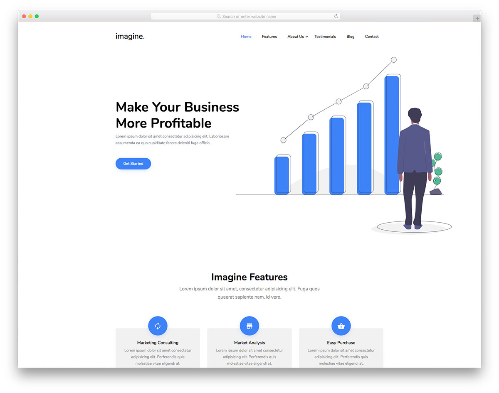
Imagine becomes your best buddy once you decide to create a one-page business website. This nifty, clean and minimal free CSS website template easily caters to all sorts of intentions out of the box. However, you can quickly expand its capabilities by enriching it with your branding touches and other customization tweaks. All is possible for as long as you keep the footer copyrights intact.
Moreover, Imagine is a tool that ensures excellent performance on all popular devices and web browsers. The technicalities, well, that’s not something that you need to take care of, as Imagine sports it out of the box anyway. You will also discover stuff like call-to-actions, sticky menu, hover effects, team presentation, testimonials and a functional contact form. Hit the download button now and make Imagine yours.
More info / Download DemoManup
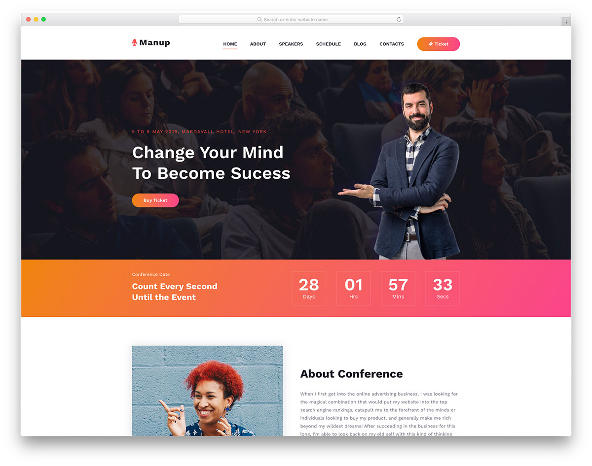
For events, conferences and other types of gatherings, Manup is the free CSS website template that will do the trick. This sophisticated, clean and modern tool is packed with greatness that calls for a quick site realization. No need to be building a page from the ground up anymore. Thanks to Manup, you can save yourself plenty of time and energy, using it to the full potential for your shiny new page.
Along with the gorgeous design, Manup also comes with many practical features for your convenience. From drop-down menu and call-to-actions to countdown timer and event schedule, you get it all and then some. Furthermore, there is also an option to start a blog where you share all the different news and whatnot to capture even more potential attendees’ attention.
More info / Download DemoTulen
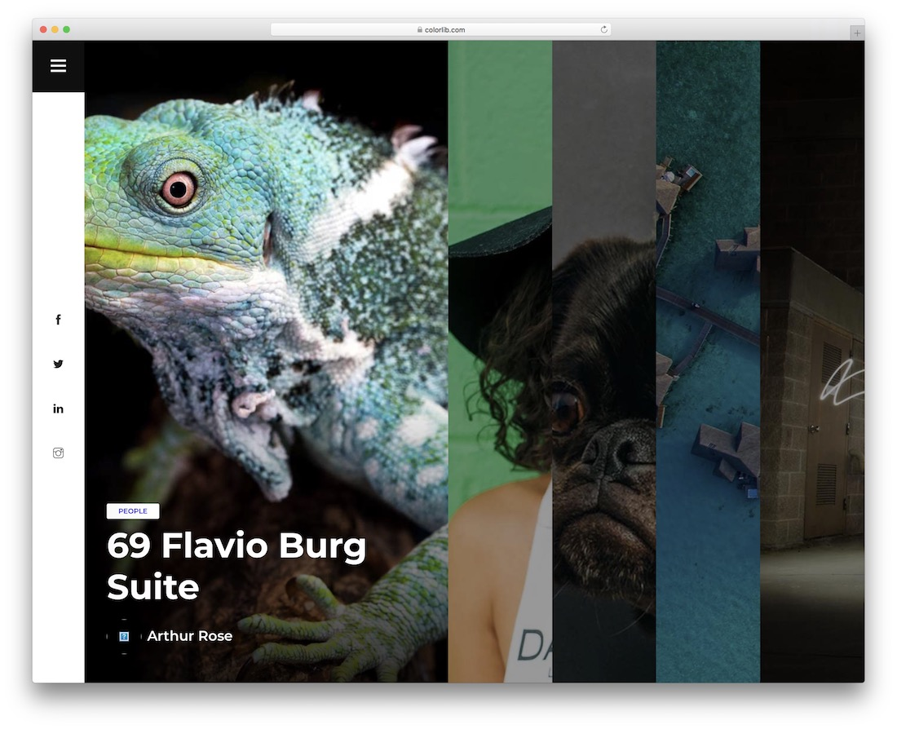
It does not really matter whether you are an amateur or professional photographer, Tulen is a spectacular free CSS website template for both. If you are looking for something different to present your works in the best possible light, you better check out Tulen. The bold, impactful and out of the ordinary design will definility trigger everyone’s curiosity. Yours, too, while seeing Tulen for the very first time. You can now proudly download the tool and take it to your total advantage. It does not cost you a dime, yet the end product will surely be spectacular. It is a guarantee!
Tulen also ensures a fluid layout, so that the experience browsing through your content will be the same amazing one across all popular devices and browsing platforms. Make it yours with a click on the button and assemble an immediate difference afterward.
More info / Download DemoGrunt

For all the creatives out there, Grunt is a spectacularly minimalistic free CSS website template that will do the trick. Instead of doing all the work yourself, you can now profit from the amazing perks that Grunt has in store for you. The cleanness of the tool offers you to use it for your specific purpose without a hitch. A touch of creativity and modernism make Grunt an exceptional solution for a first-rate online presence. And you can now take it to your total advantage without spending a dime.
Above the fold, Grunt rocks a split-screen slider with text and call-to-actions. Use this section strategically and you will have no trouble capturing your visitors and potential clients’ attention immediately. Further down, Grunt comes with different segments to tell all about your business, your completed projects, testimonials and other goodies. For your information, Grunt is best for building a one-page website.
More info / Download DemoDoyoga
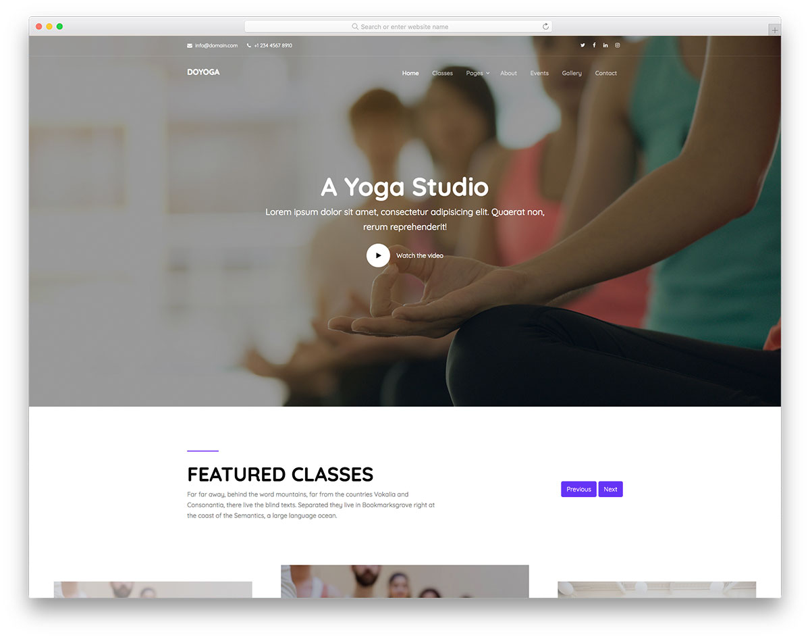
There is almost no need for an introduction when it comes to Doyoga. It is a free website template for anything yoga-related. Whether you run a yoga studio or you are a personal yoga coach, Doyoga is the template for building yourself a website that will shine on the world wide web. It has this clean and creative touch to it that makes sure everyone enjoys a pleasant experience browsing through your content. You can also lift things up by branding Doyoga and tailoring it to your requirements.
Other specialties of Doyoga are sticky menu, filterable portfolio, full-screen banner, video support, featured classes carousel, schedule and events. Doyoga also strategically places all the content on a single page, making sure everyone gets all the information in just a few scrolls. Even when it comes to a contact form!
More info / Download DemoApplab
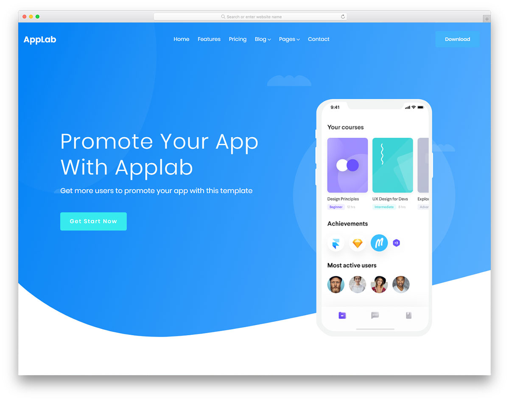
Pushing an application online requires a well-thought-out website that will increase conversions/downloads. With Applab, you can now establish a striking, distraction-free website that will raise your potential to the ultimate hight. With all the necessary in one location, your users can learn all about your app before downloading it. Make it as compelling as possible and you will enjoy the number of downloads gradually increasing.
Make it a success with Applab.
The structure of Applab is also very flexible, guaranteeing smooth and stable operation. Whether they come from a mobile or a desktop device, with Applab, your page will reshape to any screen seamlessly. Scrolling animations, user reviews, pricing tables and a contact section are all the different specialties that Applab has in store for you. Check out the live preview page and see how amazing your end product will look.
More info / Download DemoSnipp

Agencies and freelancers, you are in for a sweet treat that will help you establish an impressive online presence. Snipp is a free CSS website template that brings to the table a beautiful design and all these other practical features. You can now start with the right foot forward by taking a clever and strategic shortcut. Meaning, avoid building a page from the ground up when you have such a remarkable solution just a click away. And it is totally free of charge!
Moreover, Snipp contains sticky navigation, drop-down menu, loads content on scroll, testimonials slider and nifty special effects. Create a beautiful portfolio, start a blog and let potential prospects get in touch with you via the integrated contact form. Yes, all this and more is what you get with the mind-bending Snipp.
More info / Download DemoDogger
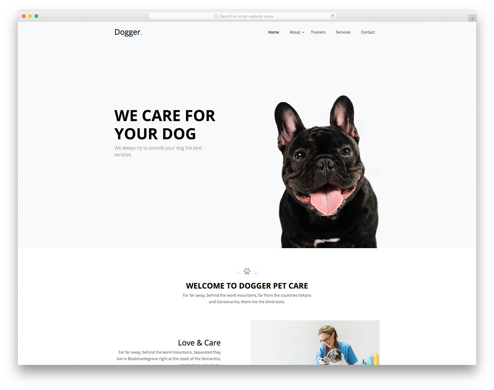
Dogger is a cool, trendy and very appealing to the eye free CSS website template for anything dog-related. Whether you operate a clinic, you are a breeder or offer a beauty salon for pets, with Dogger, you can now create a website that will turn heads. The design is very clean and minimalistic, making sure all the content comes in to view beautifully. The layout is also 100% mobile-ready and cross-browser compatible, so it operates flawlessly across all devices and platforms.
Other specialties come in the form of pricing plans, loading content on scroll, sticky menu, testimonials and wonderful gallery. And if you would like to start a blog and implement content marketing, you can do that, too. With sophisticated and modern Dogger, you have very many options and possibilities to start on the internet with something fresh and enticing.
More info / Download DemoEventcon
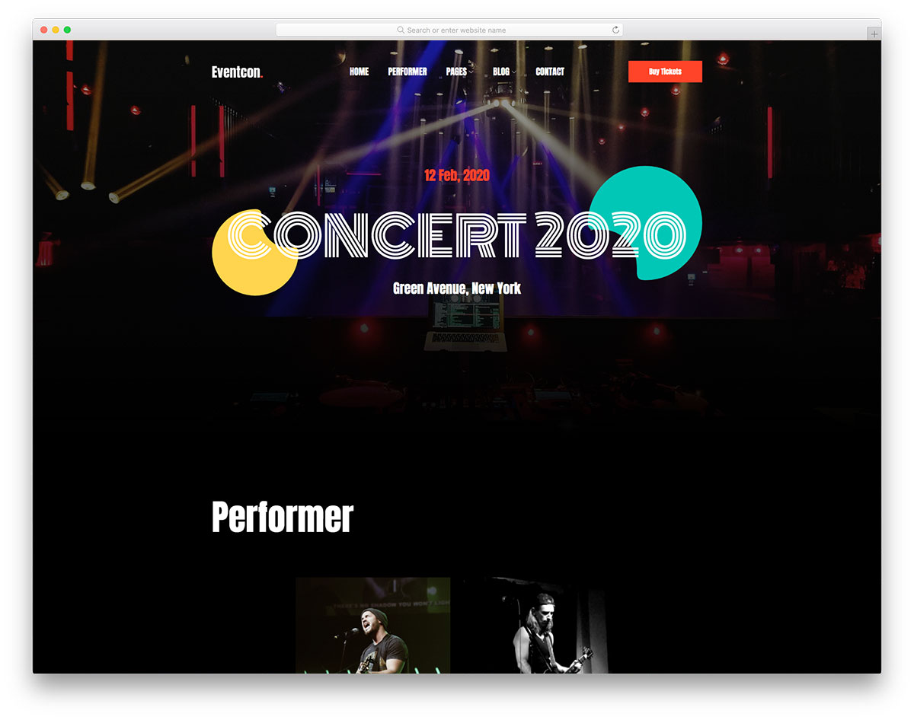
When pushing an event, a conference, even a concert, Eventcon is the free CSS website template that will do the trick. Instead of relying on 3rd-party platforms primarily, create an official website and make a difference. With Eventcon, you can now make things happen without the need to start from scratch. The layout, the design and the various features and functions are right at the tip of your fingers. Also, Eventcon comes with a dark look, making sure it triggers everyone’s interest immediately.
Other specialties of the tool contain sticky navigation, back to top button, drop-down menu, scrolling animations, program details and Google Maps. There is also a logo slider for sponsors, a contact form and an option to start a blog for all the news you would like to share.
More info / Download DemoFinloans
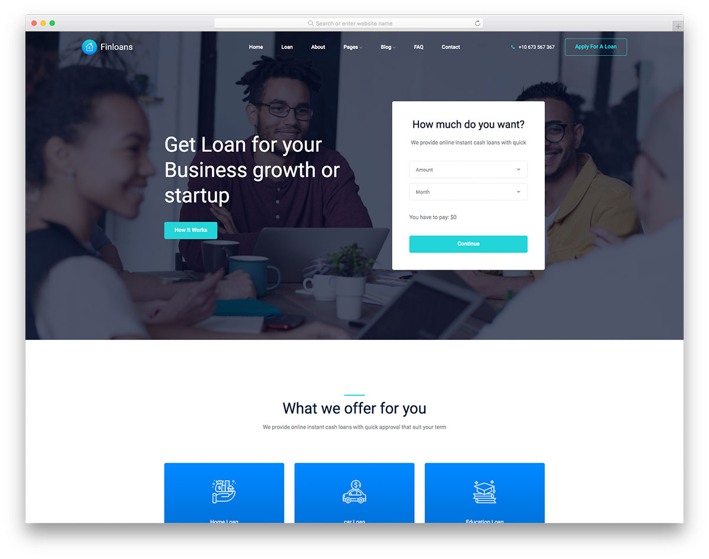
Finloans is a versatile free website template for anything finances and loans-related. If you would like to push your services over and beyond, make it happen with Finloans and call it a day. It is a tool that comes with all the necessary sections and element predefined for a quick start of something new. No need to kick things off from the ground up any longer. Let Finloans take care of the design part of the website, as well as a few other specialties that will place you right on top.
In the kit, you will discover all sorts of goodies that you can take to your total advantage. From forms and tables to sticky navigation, accordions, testimonials and a full-blown contact section, it is all there, readily available for you to put it into play.
More info / Download DemoPonigym
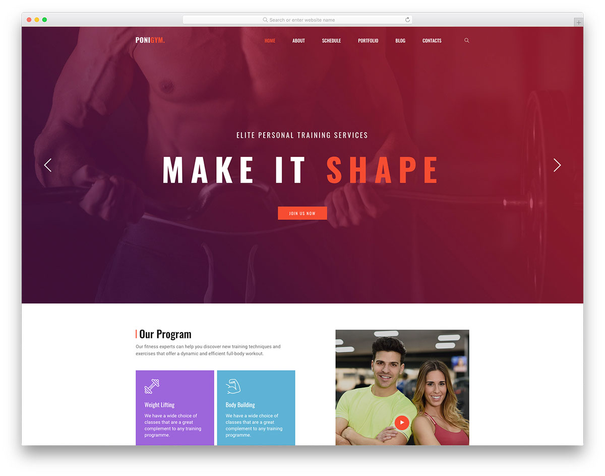
Fitness centers and gym facilities, Ponigym is the all-around free CSS website template that will assist you at establishing a first-class online presence for your business. Keep in mind, if it is free, it does not necessarily mean in is half-baked. Not in our case! All our templates meet the standards of a premium tool, however, we like to give back to the community and together make the world a better place. That said, enjoy yourself using Ponigym to the fullest and start on the web with a killer presentation of a business that will help you scale it to new heights.
When it comes to features and functions, Ponigym has very many. From slider and call-to-action buttons to Google Maps, contact form, weekly timetable and a categorized portfolio, it is all ready-made for you. Ponigym is also responsive, operating on all devices seamlessly.
More info / Download DemoAhana
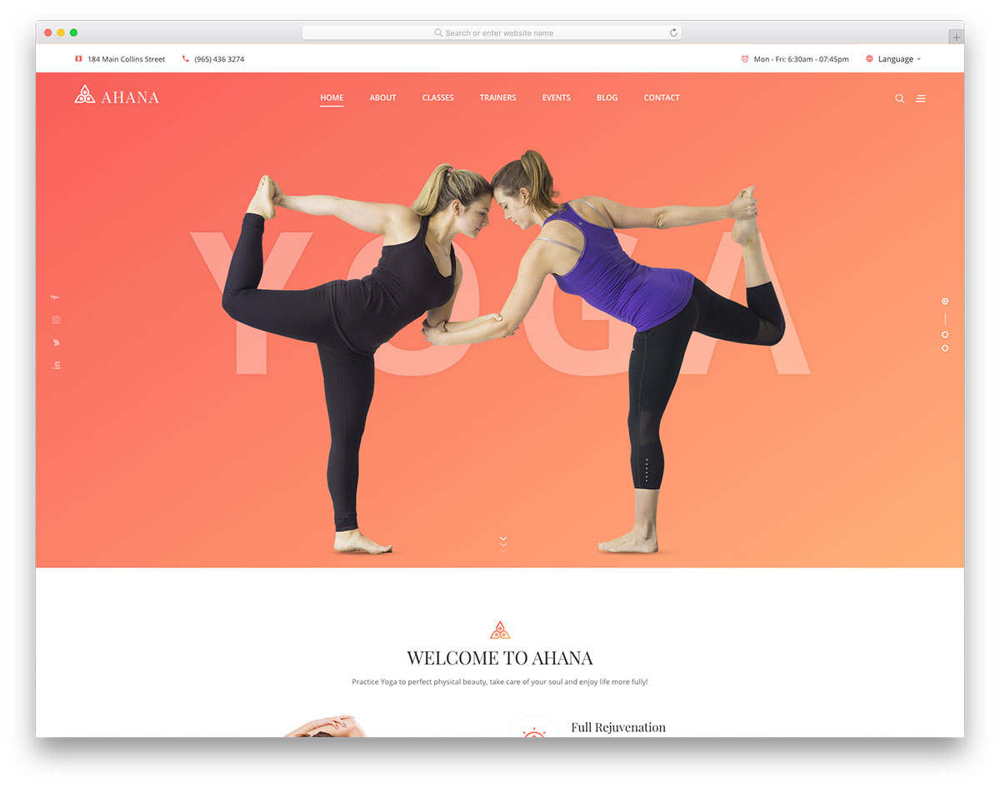
Yoga trainers and studios now have a chance to take a striking free CSS website template to their total advantage. Ahana is a dedicated tool for all the yogis out there who are looking for a way to speed up the process of establishing an online presence. With Ahana, you can now make it happen with a predefined desing and all the very many features it comes with. For a trendy and impactful website, Ahana is it.
Above the fold, Ahana comes with a top-notch slider that will trigger everyone’s interest right from the get-go. Moreover, Ahana also includes drop-down menu, back to top buttons, social media icons, testimonials and events section. Pricing plans, Google Maps and a functional contact form are also part of the kit for your convenience.
More info / Download DemoCarrent
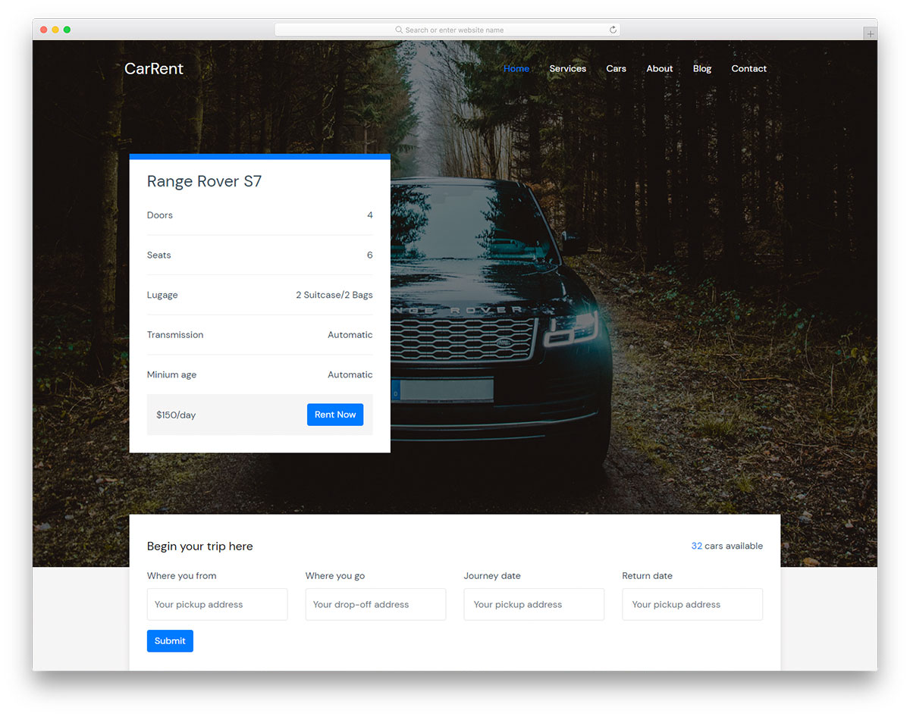
As the name would suggest, Carrent is a car rental free website template. If that is something, you are diving in, expand your reach with a banging online presence that will take you to new heights. Even if you are already an established business, but you would like to redesign your outdated page, do it with the amazingness of Carrent. This site skin features it all and then some to help you sort out a page with a wonderful appearance. Of course, this is an HTML template that needs additional work to turn it into a functional page.
Along with the beautiful look, Carrent also includes search feature, car slider, testimonials and even a blog section. The layout is 100% mobile-friendly and congruent with all modern web browsers. Thanks to light code, Carrent also operates flawlessly all the time for an always top-notch experience.
More info / Download DemoNoxen
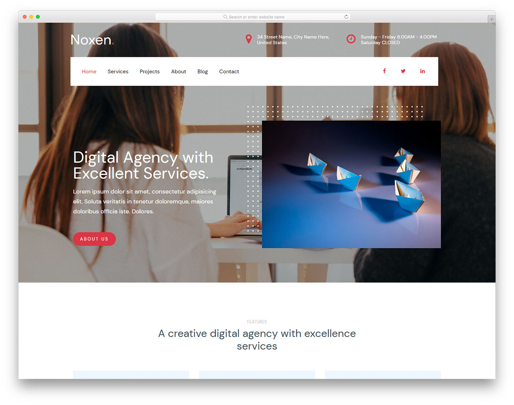
Noxen is a magnificent free CSS website template for digital and marketing agencies. If you are starting a new project or you would like to redesign your existing online presence, let Noxen take care of the design. With the modern and professional look, you will easily intrigue them to learn more about you and your services. There is also a stunning predefined section to showcase your past projects and put on display all your masterpieces.
Other features of Noxen are parallax effect, social media icons, newsletter subscription box, contact page and blog. Feel free to use the latter for content marketing and welcome even more potential business opportunities. Noxen is based on Bootstrap Framework for the necessary page flexibility and extendability. Get this HTML template to present your business on the web in the best light.
More info / Download DemoAspiration
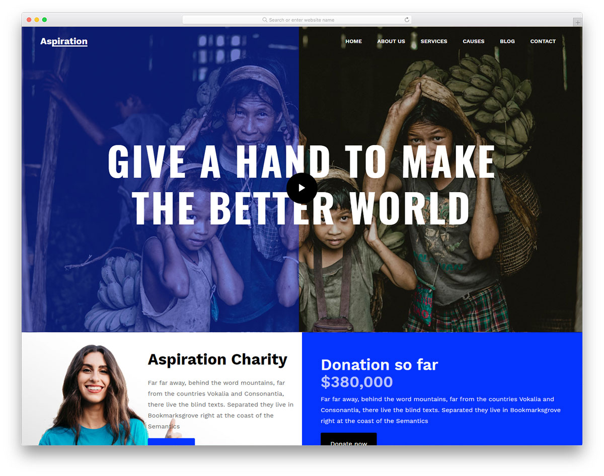
Aspiration is a free CSS website template for charities and fundraisers. If you need a solution that will get you online and help you spread awareness, this is it! Aspiration will get you going right away, without the need to get things moving forward from ground up. With the design ready-made, you can speed up the process of building a striking website drastically. Not only that, Aspiration costs you nothing, so you have nothing to lose.
Amazing full-screen banner with parallax effect welcomes everyone to your world of spreading the goodwill. Aspiration also ensures a flexible and responsive layout which guarantees top-notch performance on all devices and browsing platforms. You can also start a charity-related blog and contribute to the community in a way no one else is doing it.
More info / Download DemoBooke
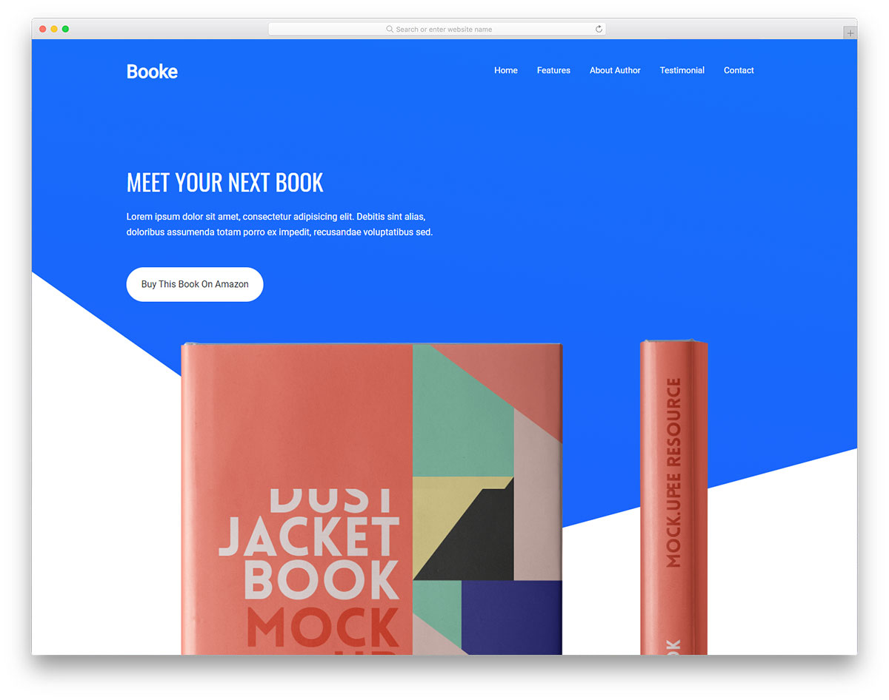
As an author, you can now push your new book online with the use of Booke. This free CSS website template is a nifty solution for realizing an online presence that will get the sales going strong. On the other hand, Booke works great for starting your own online bookstore as well. Whatever the case, you can start on the web with a website that will help you boost the hype and increase your potential through the roof. If you are ready, Booke is even readier!
Booke practices all the current trends and regulations, ensuring stable and flawless operation of your new website. The layout is 100% responsive and fluid, reshaping to all devices in an instant. Booke is also compatible with browsers and retina screens. Have in mind, Booke works ideally for crafting a one-page website, covering all the necessary and then some on a single page.
More info / Download DemoBanker
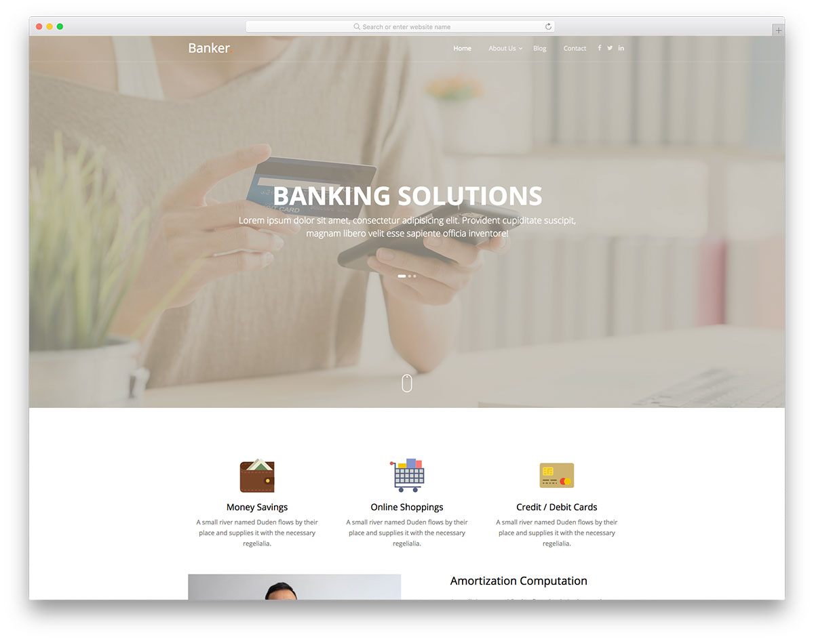
Banks and financing businesses are welcome to use the amazing perks of Banker. This free CSS website template comes with heaps of features and stunning design. Above the fold, Banker features a full-screen banner with text slider. This is a great opportunity to share a few insights into your business for a greater chance of winning them over. If you are ready to make a solid first impression, now you know where to start.
There is more to Banker.
From sticky navigation, multi-level drop-down menu and social icons to filterable gallery and on scroll content loading, Banker sports it all and then some. Pricing tables, testimonials and a working contact form are also included in the bundle. For your information, Banker works great for building one-page websites. Make it yours and shine on the internet.
More info / Download DemoCoach
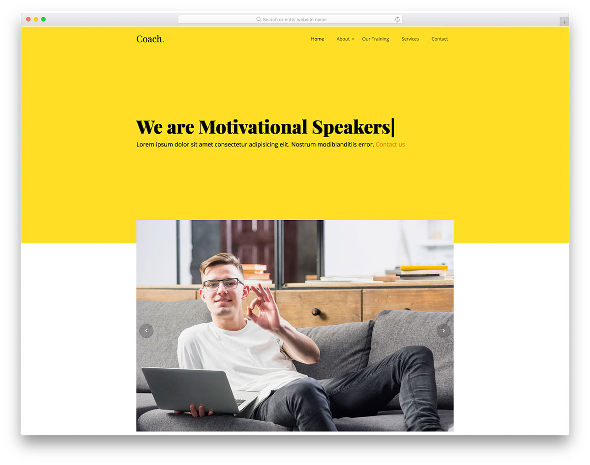
Life coaches and motivational speakers, Coach is the free CSS website template that helps you sort out an impactful online presence. If you would like to enter the industry with a bang, you can now get things moving forward with the superb Coach. The appearance of Coach is clean and creative, perfect for sparking their curiosity right from the get-go. Also, Coach sports a one-page layout that allows visitors to learn all about your business in just a few scrolls.
Typewriter effect, slider, sticky navigation, gallery, testimonials and a contact form are all the specialties that Coach treats you to. Coach also includes a blog section where you can share your knowledge and activate strategic content marketing. For a page that will stand out a mile, Coach is the solution for your speaking services.
More info / Download DemoInterior 2
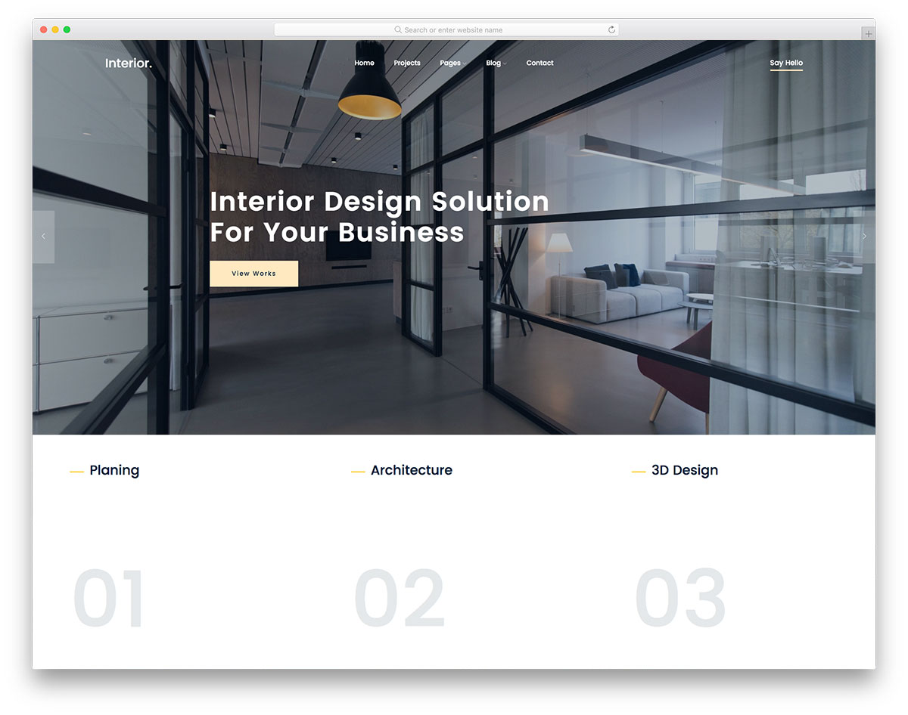
Interior 2 is a stupendous free CSS website template design that will assist you on your journey to successfully launching a first-class page. Hence the name, it is best for interior designers and agencies who are in need to level up their online presence. Just like any other template on this list, Interior 2 also comes with a responsive and fully flexible layout. In other words, your website will work on handheld and desktop devices flawlessly.
In the kit, you will discover contact form, Google Maps, blog, an awesome projects page and various elements that you can integrate quickly. You do not always need to start building a page from the ground up. In fact, you can save yourself plenty of time and energy with the use of a predefined and resourceful free template.
More info / Download DemoCardboard
Any of the free CSS website templates that you find on this list are full of amazing and unique features and functions. And Cardboard is no different! It is a wonderful and easy to use site canvas for establishing an online presence for an agency. But if you are a freelancer who digs the style of Cardboard, feel free to put it to use, too. It is a versatile and highly adaptive template that caters even to the most meticulous users.
Above the fold, there is a massive, full-screen banner with parallax effect that with spark visitors’ interest immediately. Use imagery and texts cleverly and you will have them scrolling in no time. Other specialties include testimonials, contact form, drop-down menu and sticky sidebar. For a modern, minimal and vibrant web design, Cardboard is your best bet.
More info / Download DemoCargo
Cargo is a highly adaptive free CSS website template that works ideally for transportation and logistics companies. Since it does not cost you a dime, I mean, you have nothing to lose yet oh so much to gain. A professional and first-class website is just around the corner. Of course, you need to know that this is still an HTML template that does require you to know how to code to turn it into a functional page. However, that is something you will do with ease, thanks to your amazing skills.
Cargo has sticky navigation, multi-level drop-down menu, animated statistics, pricing plans and testimonials, to name a few. Keep in mind, Cargo works excellent for establishing a single-page website, where the potential client learns all about your business in just a few scrolls.
More info / Download DemoEuropa
To get your accommodation business online, all you need is Europa. This free CSS website template has you sorted out with a top-notch design out of the box. That said, you can easily use the tool as is, introduce your details and have a page all set and ready to go. But if you would like to perform any additional tweaks and improvements, you can do that, too. In other words, make Europa follow your branding direction to the very last detail.
Europa sports all the tech aspects of a modern website. It is entirely responsive, fully compatible with all devices. Europa also instantly acclimatizes to any popular web browser and retina screen. Besides the superb home section, Europa also has about, rooms, news and contact pages included in the bundle.
More info / Download DemoIndustrial
Industrial is a pretty self-explanatory free CSS website template. It is a web design solution for every industrial and heavy-duty company out there. Industrial has a very modern and minimal appearance that beautifully displays all its content on all devices. Indeed, Industrial is 100% responsive, working on both handheld and desktop devices butter smoothly. If you would like to create a strong and memorable first impression, you would want to do it with Industrial.
Above the fold, Industrial rocks a full-screen slider that you can strategically use for capturing everyone’s curiosity right off the get-go. It loads content on the scroll, so the experience is even more pleasant. Create an in-depth presentation of each project, build customer trust with testimonials and even start a blog; a lot is possible with Industrial and all the perks it comes with.
More info / Download DemoArcwork
To bring your company profile to the online space, you do not need to start the project from the ground up. Instead, take a smart shortcut, pick a free CSS website template, like Arcwork, and speed up the process. With Arcwork, you are in good hands, thanks to all the predefined layouts and other exclusivities. From home and internal pages, it is all there, bundled in the amazing Arcwork.
What’s more, Arcwork also includes cool typewriter effect, testimonials with pictures, blog and contact page. The layout is also in tune will all the modern web trends to ensure impressive performance at all times. In other words, Arcwork is compatible with all devices, web browsers and retina screens. Enter the streets of the online world with a bang and stand out from the masses by employing Arcwork.
More info / Download DemoApproach
If you are in the process of setting up an online portfolio but have one main requirement – to be black – you came to the right place. Here is a spectacular web design, Approach, that you can download immediately and make your own. Freelancers and agencies can greatly profit from the powerful and practical Approach. It is a tool that will get you going in little to no time. As far as the design part of your page goes, you now have it all sorted out. Of course, this is still just an HTML template, but what’s that for someone as pro as you are.
Portfolio, hover effects, magnificent single project page, services section and blog, it is all at your disposal. Approach also does not miss a working contact form, video support and a 100% mobile-ready layout.
More info / Download DemoWinter
To kick off a new online store in style, Winter is the free CSS website template that will do the trick. With the out of the box solution, you create a fantastic online shopping experience that will raise your potential and win over new customers. Of course, you can also step up your game and fine-tune and customize Winter accordingly. If nothing else, you can just change the color scheme and brand the default look of Winter, so it matches your style precisely.
Along with the impressive home page design, Winter also comes with an assortment of different layouts for tracking, shopping cart, confirmation and product details. In addition to that, Winter includes Google Maps, working contact form, social buttons and blog section. Whether fully fashion-oriented or you plan to sell other goods, with Winter, you can make it happen regardless of your primary intention.
More info / Download DemoIgnite
Ignite is an exclusive free CSS website template for web hosting companies and domain registrars. For everyone who is starting fresh, skip the building process from scratch and enjoy the pleasant experience with Ignite. It is a top-notch solution which will get you on board sooner rather than later. For some, you will want to use Ignite exactly as is. On the other hand, you can also fine-tune the look of the tool, so it matches your needs and regulations precisely.
In the Ignite kit, you will find sticky navigation, domain search function, animated statistics, hover effects, pricing plans and a clean testimonials slider. To give back to the community, start a blog and share your knowledge with the world. Needless to say, Ignite is also responsive and compatible with web browsers and retina screens.
More info / Download DemoBuri
Restaurant owners and everyone who is in the food business, Buri is the free CSS website template for you. With its appetizing web design, everyone’s mouth will water instantly. Especially once you couple Buri with your professional food imagery! That’s when you will win them over with ease. Have in mind, there is a functional contact form included in the web design so that they can reserve a table right away. Also, Buri comes with Google Maps for you to show everyone the exact location of your restaurant.
Buri is based on the popular Bootstrap Framework, which makes sure that your website will be flexible and fluent. In other words, Buri works seamlessly on all devices and browsing platforms, as well as beautifully displays its content on retina screens. Get your hands on Buri and shine online with your restaurant.
More info / Download DemoOneder
Agencies, freelancers and other creatives, Oneder is the striking free CSS website template you should consider. When setting up a fresh website or redesigning the existing one, with Oneder, you can speed up the process and enjoy the outcome sooner rather than later. Oneder has tons of goodies that will put you right on track. Feel free to employ Oneder out of the box or fine-tune it further. A lot is possible with the convenient Oneder, helping you stand out a mile.
The full-screen banner welcomes everyone to your world of professionalism and sophistication. Oneder loads content on scroll, comes with sticky navigation and includes a filterable portfolio. Present your services in the best possible light, share client testimonials with a slider and put on display pricing, too. Start a successful website with Oneder now.
More info / Download DemoSnapshot
Snapshot is an all-around free CSS website template for photographers and photography agencies. If you would like to take things to a new degree, you can now make it happen with Snapshot. The dark, elegant and trendy layout of Snapshot will capture everyone’s attention in a snap of a finger. Even if using the tool exactly as is, Snapshot guarantees a dope outcome that will turn heads. But you can also personalize and brand the web design according to your needs and regulations.
Parallax effect, on scroll content loading, gallery, testimonials, working contact form and Google Maps are some of the very many features of Snapshot. Have in mind, you can employ Snapshot for creating a one-page website, too. Bring into fruition an awe-inspiring website with Snapshot and set yourself apart from the competition once and for all.
More info / Download DemoTrips
Trips – hence the name – is a free CSS website template for travel agencies, tour guides and other tourism-based businesses. It is a nifty web design that will get you going on the web speedily. At this point, you do not need to start from scratch anymore. Let Trips take care of the design part of your business-driven website and save yourself additional time and energy. For your information, this is an HTML website template that still requires additional work to turn it into a functional page.
What’s more, Trips comes with a bunch of first-class amenities that will help you start making moves online like a professional from the beginning. Also, Trips is based on Bootstrap Framework, guaranteeing you a fluid and flexible layout. In other words, Trips is 100% mobile-ready, in tune with web browsers and retina-friendly.
More info / Download DemoInstylr
As a fashion brand, you can now enter the online space with a bang, thanks to Instylr. This free CSS website template is packed with awesome features and functions for speedy site creation. This is still only an HTML template which requires experience and skills to turn it into an active website. However, you save yourself time and energy, as you will not need to come up with the design anymore. You can even use Instylr exactly as is and inspire everyone who visits your page from the get-go.
Other features contain massive slider with thumbnail preview, call-to-action buttons, social media icons, portfolio, hover effects and back to top button. With Instylr, you can also start a fashion blog and sell products online with the eCommerce section. Utilize Instylr to its full potential and kick off your fashion project like a pro.
More info / Download DemoPlataforma
Plataforma is a highly adaptive free CSS website template for conferences, events, forums and other types of gatherings. It contains all the necessities to present your upcoming event in the best possible light. Most importantly, to increase its potential of filling out all the seats. The appearance of Plataforma is modern and professional, perfect for any and every occasion. Of course, you can also improve and adjust the layout to your wants and regulations before you go live with a new page based on Plataforma.
This excellent website canvas contains countdown timer, registration form, on scroll content load, schedule, sticky menu, gallery and pricing tables. Plataforma also comes with a special section to introduce all the speakers and a newsletter subscription box to capture emails to use in later campaigns. Get the word out, sell tickets online and make your next event a success.
More info / Download DemoUza
For businesses and agencies, here is Uza. This free CSS website template prides itself on the clean, minimal and creative web design it sports. On top of that, working with Uza is simple thanks to its fully organized structure. You can enjoy employing it out of the box but you can also improve and enhance it per your requirements. No doubt, the outcome will always be outstanding, attracting new potential clients in desperate need of your services.
Uza includes a broad range of different features that will do your online presence exceptionally well. Slider with cool transitions, video support, categorized portfolio page, blog section and a contact page with form and Google Maps, it is all at your disposal. All you need to do is to download the template and get things moving forward in the right direction.
More info / Download DemoSatner
Web developers, designers, freelancers, professional individuals and all the rest that need to push their services and boost their business, Satner is the free CSS website template that gets your rolling. With Satner, you are about to set up an interesting online resume and portfolio website that will market your expertness and help you score new business deals. It is the design that will make you start considering using Satner. It is very appealing to the eye, innovative and original, yet keeping things simple and to the point.
Satner has sticky navigation, categorized portfolio, testimonials and a newsletter subscription form. In addition, the tool also delivers a responsive and mobile-ready web design, compatible with retina screens and web browsers. Get your name out there, elevate your web space and attain great successes.
More info / Download DemoMyHome
Indeed, MyHome is a free real estate and CSS website template for agencies and realtors. Houses, homes, apartments and other properties now get a new home online where you can share more images and create an in-depth presentation of each. With a solid website, you can help those in need find the most fitting place a lot quicker than they first thought. Have a complete portfolio of available properties online at all times so they can access it whenever they want.
With MyHome, you can skip working on the design – it is already done for you! While you can use it as is, you can also make MyHome match your branding needs and even improve it if needed. The tool costs you nothing so feel free to download it now and start playing around with different possibilities. Find what works best for you and take your business to a whole new degree.
More info / Download DemoFitness
Fitness hides nothing. It is a health and fitness free CSS website template with great features and stunning performance. Once you see it, you will fully commit in an instant in case this is the type of a page you would like to create. While being consistent with your workouts might not be the simplest process, hammering out a neat page with Fitness is fairly easy.
From a massive banner with text and call-to-action (CTA) button to sticky multi-level drop-down navigation and courses slider, Fitness is packed with goodies. It has all the special sections to push your training programs and special gym deals you offer. What makes it a real gem amongst free fitness templates is the included body mass index (BMI) calculator. Of course, Fitness also comes with a clean gallery to show the world what you can do with your body.
More info / Download DemoEducation
Like Fitness, Education is one of those free CSS website templates that goes straight to the point. With a name like that, you already know what you get. A fantastic tool for making education-first websites. You can use it for schools, universities, online courses and other training programs, Education handles it all. It is responsive and retina ready, compatible with all major browsers and guarantees fantastic user experience.
Sticky and transparent navigation, sliders for courses and testimonials, advanced courses search and even blog pages make Education and all-in-one tool for your web presence. As far as the blog goes, you can freely use it to build an independent website and begin releasing compelling articles relating to teaching, tutoring, schooling, you name it.
More info / Download DemoJobpply

Jobpply is – hence the name – a great free CSS website template for your next job board project. With its clean and contemporary layout, you can create a comfortable atmosphere for both employers and job seekers. Indeed, Jobpply is entirely responsive, meaning, your online platform will work like a charm on smartphones, tablets and desktop computers. Since we are already speaking about the technical aspects of Jobpply, of course, it is also cross-browser compatible, retina screen ready and optimized for outstanding performance.
Jobpply rocks convenient search features, post a job form, call-to-action buttons, testimonials, social media icons and subscription widget. You can also use the blog section where you can share all sorts of tips and tricks on how to find new employment or the right candidate for your firm. Make Jobpply yours by modifying and fine-tuning it according to your branding requirements.
More info / Download DemoEatery
Eatery is an appetizing free CSS website template for restaurants, catering firms and other food businesses. The layout of Eatery is mobile-ready and cross-browser compatible, smoothly operating on any device and browsing platform. Instead of figuring out how to present your business on the web, just stick with Eatery and all the rest becomes history. Eatery delivers an eye-catchy design that will surely make everyone’s mouth water. Just introduce your salivating, professional imagery and you can win them over without a sweat.
Above the fold, Eatery treats every visitor to a full-screen slideshow with text and call-to-action buttons. This is the best moment to make your imagery do the work. Moreover, Eatery loads all the content flawlessly on scroll for a pleasing experience. You have the layout all set up, just turn it into a functional food-first website and you are ready to roll.
More info / Download DemoDaren
Daren is a creative and easily distinguishing free CSS website template for blogs and online magazines. If you would like to differentiate yourself from the masses, Daren is a great solution for you. No need to overcomplicate, just choose the excellent Daren and you are ready for the fun. While minimal at first glance, Daren rocks loads of cool features which lift up the overall experience. However, to Daren, your content still matters most, making sure all your users enjoy skimming through your page without distractions.
The features of Daren are very many, ensuring you an almost premium-like web design. Social media icons, drop-down menu, sticky navbar, newsletter subscription and, of course, a working contact form with Google Maps, Daren knows how to serve all its users nothing but the best. Share your story in style and shine online with Daren.
More info / Download DemoBizcon
When you are figuring out the ideal website for your business, you will find quite a bunch here, in this collection of free CSS website templates. Whether you are picky or not, we sure have something for everyone. Bizcon is another supreme tool that will help you save time and effort.
No need to start from the ground up when you can simply go with Bizcon and make an epic difference. The web design is fresh and modern, perfect for pushing your company and services over and beyond. Along with simplicity, Bizcon also has many great details which ensure a strong and lasting first impression.
Cool animations, hover effects, sticky menu, social media buttons, drop-down functions, blog pages and contact sections, Bizcon covers it all and then some. To top it all up, you can also customize the default layout and make it yours.
More info / Download DemoCamille
Do you operate a beauty salon? If so, Camille is the free CSS website template you should get your hands on this very moment. After all, the page skin costs you nothing, yet the outcome will surely be a magnificent web space that will take your business to new heights. You now have a neat web design that will display all the services you offer, pricing plans, as well as portfolio. Every potential client can learn all about you and your business only by hitting your website. And if you take your page to a new level, you can also offer them to make online appointments. How convenient would that be!
Camille ensures a simplistic and minimalistic web design that will capture their attention as soon as your page loads. There is also a cool slideshow that appears above the fold which you can use for pushing special promotions and any other news you would like to share with your crowd.
More info / Download DemoToothsy
As the name suggests, Toothsy is a free CSS website template for dentists and dental clinics. By the way, Toothsy also rocks a single-page layout so you keep everything gathered in one location. It is getting more and more popular, in fact, to have a one-page website instead of a multi-page. In the case of a dental website, this comes very welcomely. Your potential clients can learn all about your clinic and the services you offer by simply scrolling up and down.
Toothsy introduces everyone to your world with a full-screen banner, text and call-to-action button. This is the moment when you capture their attention or not. Just use the banner strategically and you will win over more clients. Additional amenities include animated statistics, blog, contact form, newsletter subscription, static navbar and more,
More info / Download DemoNamaste

Namaste – hence the name – is a free CSS website template for yoga instructors and studios. It has a gorgeous design that will instantly cater to your needs and requirements. If you are in the process of setting up an admirable online presence, help yourself with Namaste. It is a great starting point to speed up the process and have a final product up and ready to go live sooner rather than later. Also, Namaste follows all the latest trends in web development for a steady operation. That said, Namaste is mobile-ready, cross-browser compatible and retina-friendly.
In the bundle, you will find a neat home and several more internal layouts, as well as pricing tables, Google Maps and a functional contact form. Blog pages are included, too, for you to start sharing tips and tricks on yoga and a healthy lifestyle.
More info / Download DemoShopmax
There is no need to overcomplicate when it comes to creating an eCommerce website. In fact, keeping it simple will do you more good. That said, if you are on the hunt for a free CSS website template for an online store, do not forget about Shopmax. This page skin is beautiful and very appealing to the eye. It will impress all your potential shoppers with a flawless experience. Shopmax makes sure that all your items are placed right in front of your potential customers’ eyes. Distraction free!
Whether they use a smartphone or a laptop, it does not really matter, as Shopmax reshapes its layout to any device instantly. Additionally, Shopmax includes multi-level drop-down menu, product slider and a functional contact form. Start on the web strong with a banging online store thanks to Shopmax.
More info / Download DemoFitnessTrainer
Fitness coaches and personal trainers, raise your potential to the extreme with a nifty website. To build yourself one, you can help yourself out with FitnessTrainer. This free CSS website template covers all the necessary to present your services in the best possible light. No need to start from scratch anymore when you can get your hands on FitnessTrainer and begin moving things forward professional right off the bat.
FitnessTrainer comes with very many features what makes it more like a premium tool than a free one. From menu overlay and sticky navigation to testimonials, gallery, logo slider and social media icons, FitnessTrainer has it all and then some. Additionally, FitnessTrainer also includes a blog which you can use for sharing different tips and tricks on how to get in shape and stay healthy.
More info / Download DemoSasu
Apps, software and other product and services, if in need to create a landing page, Sasu is the solution for you. This killer free CSS website template creates a solid atmosphere where everyone will enjoy hanging out. With Sasu, you can share all and everything about your project, making sure prospective users get the most out of it. Let the landing page persuade them and get them on board without a hassle. That said, expect only good things coming your way once you enter the world of Sasu.
Sasu has a modern, clean and sophisticated look with great attention to detail. It has a sticky menu, pricing plans, social media icons and call-to-action buttons strategically placed along with the layout. Google Maps and functional contact form are also integrated into the web design for your convenience.
More info / Download DemoJackson
Creating a personal portfolio happens sooner rather than later with Jackson. Once you gain access to a free CSS website template, all the rest becomes history. As for the web design, you have it all sorted out thanks to the first-class tool, Jackson. The template makes sure you get the most out of it without breaking a single drop of sweat. Of course, coding knowledge is necessary to turn Jackson into a functional and practical website before going live online.
In the bundle, you will find stuff such as slider, sticky sidebar/navigation, animated statistics, on scroll content load, accordions, timeline, load more buttons and many other goodies. Of course, Jackson also does not miss working contact form and blog pages. Whether a freelance designer, photographer, artist, illustrator, you name it, Jackson makes sure the outcome captures everyone’s attention.
More info / Download DemoDingo
As a restaurant owner or pretty much any food business that you run, Dingo is the free CSS website template to consider. With the impressive design, Dingo sports, you have a chance to step things up a few notches and take your restaurant to an entirely new degree. One thing is for sure, couple Dingo’s eye-catchy layout with images of your tasty dishes and you will surely win over even more customers. Not to mention, offer them to book a table online and you will have your place full all the time. Of course, marketing plays a big part in it. Still, if your page is set up in a way that will capture their interest, you are on the right path to success.
Dingo comes with categorized foods and drinks menu, sticky navigation, video support, book a table form with date and time pickers, reviews slider and blog. Create a complete and highly effective online presence with Dingo and make a difference.
More info / Download DemoEden
Eden is a fantastic free CSS website template for online magazines and news-related pages. Regardless of the niche, you would like to dive in, you can make it happen with Eden. It is a versatile and adaptive website skin which puts a strong emphasis on your content. No to mention, if you would like to distinguish yourself from the masses, Eden is definitely the template you should consider. It definitely does not have an everyday online magazine look.
Additionally, Eden is based on the well-liked Bootstrap Framework with a 100% mobile-ready, retina-friendly and cross-browser compatible layout. It is a guarantee that your page will display its content flawlessly on all devices for an always excellent reading experience. Add your creative touch to it, modify the default look to your likings and you can easily enter the online world with a bang.
More info / Download DemoMedcare
As the name suggests, Medcare is a free CSS website template for medical and health websites. Hospitals, clinics, dentists, surgeons and anyone else in the space can now comfortably approach website development. Medcare has a modern and professional look that will help your business reach the highest standards. Of course, you can introduce your regulations and branding and alter the layout accordingly. Medcare is organized and simple to use, perfect for experts and beginners.
While Medcare presents all your services, departments and doctors uniquely, you can also expand your online presence with a blog. Use the latter for content marketing, as well as to produce knowledgable articles that will benefit the end user. Use your imagination, push your expertise and see the difference. With Medcare, you can attain fantastic results for your clinic or health institution and take it to the next level.
More info / Download DemoOneschool
Oneschool is a one-page free CSS website template for schools, universities and online courses to name a few. In short, if you are building an educational page, you can realize it with confidence by employing the powerful Oneschool. First and foremost, Oneschool practices all the latest trends and regulations, making sure your final creation will stand the test of time. In other words, Oneschool is based on Bootstrap, flexible, compatible with mobile devices, as well as retina screens and modern web browsers.
What’s more, Oneschool also rocks a decent collection of features which make it look more premium than free. Full-screen banner with parallax effect, sign-up form, working contact page, on scroll content load, sticky navigation and courses slider are just some of the goodies that Oneschool treats you to. Kick it off by downloading the tool now and start moving toward the successful launch of your educational page.
More info / Download DemoCivic
Building a personal website which you can also use as a resume just became a whole lot simpler. Here is our amazing free CSS website template, Civic, which will do wonders for you. It has a big and bold web design with its main focus being your content and information. The large timeline is clearly visible so no one is even possible to miss it. Share your work experience, education and list down the amazing references you have. Whoever visits your site that you are about to bring to reality with Civic will be impressed.
Civic also has a mesmerizing portfolio section and an additional segment for all the extra skills and talent you have. Besides, right down at the bottom, it also sports a functional and super clean contact form for you to start receiving new gig deals on a regular.
More info / Download DemoInterior
We try and keep this collection of the top free CSS website templates as versatile as possible. That said, here is an exclusive tool for architecture agencies and interior designers simply called, Interior. Sometimes, you just want to keep things as simple as possible, even when it comes to the name of the product. In this case, everyone instantly knows what he or she gets.
Interior is a mobile-ready website template based on Bootstrap Framework what supplies pliability and simplicity. The web design is clean and minimal for your works and offerings to stand out. Push the stuff that makes your firm unique, showcase client testimonials to build trust and capture visitors’ emails with newsletter subscription box. What’s more, Interior also has an active contact page and a stunning blog section.
More info / Download DemoAgenda
If you are an event organizer, then Agenda will come extremely helpful. It is a fantastic and greatly performing free CSS website template for seminars, forums, meetings, gigs, concerts and similar. You can also get creative with Agenda and use it for all sorts of other websites. Spark interest in everyone that ever visits your page and have him or her intrigued and make them attend your event.
List down all the forthcoming events you will host in your local area, announce the big names and offer them to buy tickets straight from your page. Promote partners who help you make it all happen and aim to capture their emails for future promotions. After all, who does not like to sign up for a newsletter to receive all the information about the upcoming events in their town?
More info / Download DemoStuff
Stuff is meant for all of your stuff that you would like to write about and share with the world. It is a unique free CSS website template for blogs in all niches. Stuff goes well with food, fashion, lifestyle, gadgets, travel and all sorts of other topics that you are passionate about. Awesome slideshow and neat drop-down navigation grab the attention of everyone that lands on your site.
The best part?
Stuff sports all types of posts, is entirely responsive and quick to adapt to your project needs. One super cool feature of Stuff is the integrated full-width Instagram feed. Everyone seems to be talking about the photo sharing social media platform nowadays, so better include it in your plan. Stuff does not really look it is a free template due to the numerous incredible features it brings to the table.
More info / Download DemoWorld

With a compelling blog, online magazine or any other news related website, you can reach the entire world easily. And it is our advanced free CSS website template, World, which will help you accomplish your goals. It gives you the freedom that you need to bring your ideas into words and spread them out there. World has everything you need to start a sophisticated online magazine and make it known.
Give yourself a chance to start something new and turn what was once only a fantasy into a reality. No matter what your passion is, you can start turning it into something much more with World. As far as the topics go, World does not really mind what you plan to write about. It could be sports, foods, politics, whatever comes to your mind, World can manage it.
More info / Download DemoCharity 2
Charity 2 is the second edition of our first ever free charity website template. We improved it, make it better and gave it a slight twist regarding the design to make it even more appealing to the eye. No matter if you run a non-profit organization or you would just like to raise awareness for a particular cause, Charity 2 brings it to fruition for you easily.
Can you even beat that?
If you are Charity 2, you can go further and offer even more to your users. From blog section and neat single cause page to parallax effect, testimonials slider and social media links, Charity 2 has it all at your disposal. Make it popular and bring in more people to support your charity with a cutting edge website.
More info / Download DemoTranscend
To truly appear original on the web, look no further than Transcend. This one-of-a-kind free CSS website template is here to please all your needs and requests. If you run a creative or digital agency, Transcend is ready to sort you out with an enticing web presence. Not only that but it will also help you grow your business to new levels and gain you fresh project deals.
Transcend is a landing page website template with fascinating features and impressive performance. Parallax effect, on scroll content load, big portfolio and animated statistics, with Transcend, you can persuade even the pickiest ones. By the way, Transcend has both scroll down and back to top buttons. If you do not own a website yet or your current one might be outdated, refresh it with Transcend today and shine on the web.
More info / Download DemoOriginal
Needless to say, you got to be original if you would like to succeed in anything that you want to do. On top of that, invest loads of work into it and victory awaits you. However, once you come to creating a website, take the needed shortcut and make it happen with Original. It is a free CSS website template for lifestyle blogs but it does apply to other subjects, too.
Original template is a distinctive tool for creating terrific pages which everyone would love to return to regularly. From the fantastic carousel slider and pleasing header to feature-rich sidebar and Instagram feed, Original sports all the necessities and then some. Crafting a one-of-a-kind experience with Original is very possible. Jump in with both feet and let Original fulfill your blogging journey.
More info / Download DemoHalo
While Halo focuses on the photography industry first thing, you can also use it for other projects. In other words, this free CSS website template applies well to creative agencies and professional individuals who are in need to promote their works and attract new clients. Halo has a massive banner that creates a strong first impression and makes everyone hungry for more.
But that does not come even close to all that Halo features you.
The full-width layout of Halo is so interest sparking, no one is able to resist it. Even yourself once you land on the live preview page of the tool. It is magnificent, that is for sure. Implemented into the web design is also an unbeatable portfolio that makes whatever you do appear even more professional than it already is.
More info / Download DemoBato
If you are still waiting for the right moment to come to finally build a website, it is Bato which gives you every single reason why you should do it right now. With a superb free CSS website template like Bato is, you have a great chance of succeeding online. It helps you to stand out from the crowd, go against the grain and make yourself known.
Bato is packed with numerous outstanding features which you will be impressed by as soon as you check its live preview. We made sure to produce a template for every creative mind out there who is in need of something more. The Bato experience begins with a splendid home page which sports nothing else than a peculiar slider. You might not have seen one of such yet in your life. But it is not only the front page of the template what needs your attention. Every other inner section and element was carefully put together to wow every person visiting your page.
More info / Download DemoInvest
No matter what financial business you have, a web presence is the first thing you need to create for it. With Invest, you can make investment company, consultant, cryptocurrency, tax or any other page swiftly and effectively. It is a responsive tool that quickly and smoothly adapts to any screen, from a mobile phone and up to a desktop computer. No time to waste, establish a first-class website with Invest template and find even more clients in need of your help.
Invest is a free template which comes with many great characteristics for a superb online appearance. It has two exclusive home page demos at your disposal, one for financial business and the other for coin market. You can perform different tweaks to the demo of choice and tailor it to your needs precisely.
More info / Download DemoEvent
Event is the ideal solution for single gig pages. This could be a seminar, a meeting, a forum, a concert, no matter what you plan to host, Event is ready to bring it to the online space. Persuading visitors to attend your event begins with a full-screen slider that supports parallax effect and a comfortable navigation. Further down the page, you can chat more about the actual happening, display awesome statistics with an animation and showcase images from past gatherings.
What’s extra cool about Event is the smart and clearly visible timeline it has integrated into the layout. Use it for event schedule so your attendees never miss a single chapter. Promote speakers with the awesome pop-up bio and use Google Maps to tell the exact location. As an extra gem, Event also comes with a blog section for telling your story and content marketing.
More info / Download DemoDestino
Destino is the best solution for those who help others discover new worlds. It is a free CSS website template for travel agencies with a great deal of powerful features. The template is based on Bootstrap Framework, is 100% responsive and high-tech screen compatible. Like any other tool, Destino is also in tune with all the modern web browsers and makes sure the experience browsing your page is always a flawless one.
Right below the full-screen banner, Destino sports the much needed adventure finder. You can set your own categories and prices for the user to find what they are looking for in a breeze. Advertise special deals, include your promotional video and always have popular destinations on the horizon. And if they do not feel like booking right away, they surely will not mind subscribing to your newsletter. Let them stay up to date with your offerings and give them a chance to act quickly once they see the trip that suits them best.
More info / Download DemoCoza Store

To sell fashion and accessories online, you need a clean and trendy page which puts its main focus on your items. Instead of creating one from scratch, you can now build an eCommerce website with Coza Store. The website canvas is fully loaded with superb features which you will enjoy using and benefitting from. Just look at the amazing slideshow Coza Store sports. It is best for advertising latest drops and even to push the secret sale you are running.
But that is far from being it.
Coza Store has a minimal and contemporary look to it that will make everyone exciting to browse through your page. It comes with a quick view feature which allows shoppers to check a particular product without leaving the current page. Doesn’t that sound quite premium to you? Incredible shop pages, blog, about section and contact page with a form and Google Maps, Coza Store is everything that you need for the online store you plan to launch. Ready?
More info / Download DemoRobust
Robust is a modern website template that can be used by any gym or fitness website. The buttons are more rounded, no more old-fashioned boxes. The CSS works are also great on this template, the layouts, spacing and the fine use of green color to indicate health; everything is used in the apt proportion. That makes the Robust CSS website template unique from others.
The use of modern workout icons for the daily schedule of the week is an impressive design idea.
The pricing section is also taken care on this website template; there is ample space on each price card. It helps you to describe the plan neatly to the visitors.
More info / Download DemoStudio
Studio is for studios, isn’t it obvious? Well, what kind of studios? There are many options and, for the most part, Studio template takes care of them all. However, by default, this free CSS website template is for photography studios. What you will, unquestionably, find the most astonishing about the tool is the first page slider. It is executed in a very unique and original way to glue everyone to their screens.
Along with the awe-inspiring front page, Studio also has other inner sections that cover every segment of your creative atelier. From about and portfolio to blog and contact page, Studio comes with all and then some. If you wish to own a page that is not something that you see over and over again, it is Studio that you need to go with.
More info / Download DemoFree WordPress CSS Website Template
WordPress is the best CMS you can use to start your website from scratch. The difference between the HTML5 & CSS template and WordPress template is, you can efficiently manage your site. You can update the theme, or you can add extra functionalities to the WordPress templates easily with the help of plugins. Saying that these are the best free WordPress CSS website template.
Shapely
Shapely is a multi-page free WordPress CSS template. You have all the necessary theme elements you need in a professional website. With the pixel perfect theme design, your website can easily make a professional mark as soon as the visitor lands on your website.
With the modern CSS animations and clean look, you get all the pages you need for a professional website in this free WordPress template.
More info / Download DemoWhat’s Your Choice
These are the best free CSS templates you can use for your website. The WordPress website template gives you a lot of benefits than the HTML website templates. The modern HTML5 templates give you all the advanced features you need on a website but still maintaining a WordPress website is more comfortable than the HTML website.
In our next blog post, we will be covering the best modern HTML5 template. Subscribe to the newsletter to get notified as soon as the post is published. What’s your favorite CSS website template? Let us know in the comment section.
Looking for the best WordPress theme?
 Get it now!
Get it now!


This Post Has 0 Comments